<!doctype html>
<html lang="en">
<head>
  <meta charset="utf-8">
  <meta name="viewport" content="width=device-width, initial-scale=1">
  <title>arxiv digest — 2026-08-12</title>
  <style>
:root {
  --bg: #ffffff;
  --fg: #1f2328;
  --muted: #59636e;
  --border: #d0d7de;
  --card: #f6f8fa;
  --link: #0969da;
}
body {
  max-width: 980px;
  margin: 0 auto;
  padding: 2rem 1rem 5rem;
  font-family: -apple-system, BlinkMacSystemFont, "Segoe UI", Helvetica, Arial, sans-serif;
  line-height: 1.55;
  color: var(--fg);
  background: var(--bg);
}
a { color: var(--link); }
img { max-width: 100%; height: auto; }
pre, code { background: var(--card); border-radius: 6px; }
pre { padding: 1rem; overflow-x: auto; }
blockquote { border-left: 4px solid var(--border); padding-left: 1rem; color: var(--muted); }
details { margin: 0.6rem 0; }
summary { cursor: pointer; font-weight: 600; }
.paper-figures-scroll {
  display: flex;
  gap: 1rem;
  overflow-x: auto;
  overscroll-behavior-x: contain;
  padding: 0.75rem 0.25rem 1rem;
  margin: 1rem 0 1.25rem;
  border-top: 1px solid var(--border);
  border-bottom: 1px solid var(--border);
  scroll-snap-type: x proximity;
}
.paper-figure-card {
  flex: 0 0 min(260px, 72vw);
  scroll-snap-align: start;
  background: var(--card);
  border: 1px solid var(--border);
  border-radius: 12px;
  padding: 0.55rem;
}
.paper-figure-card img {
  display: block;
  width: 100%;
  max-height: 240px;
  object-fit: contain;
  background: white;
  border-radius: 8px;
}
.paper-figure-caption {
  display: block;
  margin-top: 0.5rem;
  color: var(--muted);
  font-size: 0.85rem;
}
.figure-strip-hint {
  color: var(--muted);
  font-size: 0.9rem;
  margin-bottom: -0.3rem;
}
</style>
  <!-- MathJax: renders $...$ inline math and $$...$$ display math, plus
       \(...\) and \[...\]. Loaded from the official CDN; works offline
       once cached. Configured to skip code/pre blocks so arxiv IDs that
       look like dollar amounts don't get mangled. -->
  <script>
    window.MathJax = {
      tex: {
        inlineMath: [['$', '$'], ['\\(', '\\)']],
        displayMath: [['$$', '$$'], ['\\[', '\\]']],
        processEscapes: true,
        processEnvironments: true
      },
      options: {
        skipHtmlTags: ['script', 'noscript', 'style', 'textarea', 'pre', 'code'],
        ignoreHtmlClass: 'tex2jax_ignore',
        processHtmlClass: 'tex2jax_process'
      }
    };
  </script>
  <script id="MathJax-script" async
    src="https://cdn.jsdelivr.net/npm/mathjax@3/es5/tex-chtml.js"></script>
</head>
<body>
<header style="background-color: #333; color: white; padding: 15px; margin-bottom: 20px;">
  <h1 style="margin: 0; font-size: 24px;">
    <a href="https://ochelpan.github.io/arXiv_clean/" style="color: white; text-decoration: none;">Main</a>
  </h1>
</header>

<h1>Daily arXiv Report</h1>

<hr>
<p>
<a href="index.html">← Index</a>
 · <a href="papers_03.html">← Previous</a> · <a href="papers_05.html">Next →</a>
</p>
<hr>

<h2>Papers 61–80</h2>
<p><a id="paper-2608.08625"></a></p>
<h3 id="retained-hidden-excess-generates-memory-in-price-limited-markets"><a href="http://arxiv.org/abs/2608.08625v1">Retained hidden excess generates memory in price-limited markets</a></h3>
<p><strong>Authors:</strong> Debraj Das<br>
<strong>Type:</strong> theory · <strong>Category:</strong> statistical mechanics · <strong>PDF:</strong> <a href="https://arxiv.org/pdf/2608.08625v1">https://arxiv.org/pdf/2608.08625v1</a><br>
<strong>Analysis basis:</strong> full PDF text, analyzed in chunks
<strong>Topic relevance:</strong> <code>non-equilibrium universality</code> <strong>3/5</strong> · <code>driven-dissipative phase transition</code> <strong>2/5</strong> · <code>Frenkel-Kontorova</code> <strong>1/5</strong> · <code>analog quantum simulation</code> <strong>1/5</strong> · <code>correlated / nonlocal dissipation</code> <strong>1/5</strong> · <code>methods for driven-dissipative</code> <strong>1/5</strong> · <code>quantum measurements</code> <strong>1/5</strong> · <code>scars &amp; prethermalization</code> <strong>1/5</strong></p>
<div class="figure-strip-hint">↔ Scroll figures horizontally</div>
<div class="paper-figures-scroll">
<figure class="paper-figure-card">
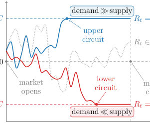
<figcaption class="paper-figure-caption"><b>Fig 1.</b> FIG. 1. Possible intraday evolution of the running return rt(τ) under a symmetric return band with limits at ±C. The realized daily return is the closing value Rt = rt(τclose). A limit close records Rt = ±C but does not reveal the magni- tude of the underlying excess demand or supply. Note that the discrete-time quantity Rt does not resolve the intermedi- ate intraday path; the model instead maps the state directly from one market close to the next.</figcaption>
</figure>
<figure class="paper-figure-card">
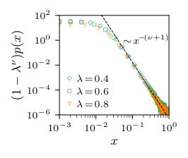
<figcaption class="paper-figure-caption"><b>Fig 2.</b> FIG. 2. Positive-tail collapse of the stationary latent den- sity p(x) confirming the amplitude renormalization (6) with C = 0.1 and ν = 3.5. Symbols are obtained from stationary trajectories of length 1010 generated by numerical simulations using Student’s t driving shocks with degrees of freedom ν and scale parameter sϵ = 0.01 [see Appendix B].</figcaption>
</figure>
<figure class="paper-figure-card">
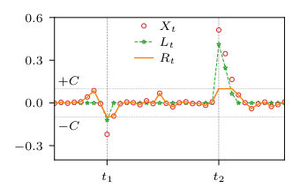
<figcaption class="paper-figure-caption"><b>Fig 3.</b> FIG. 3. Representative discrete-time trajectory of the latent return Xt, realized return Rt, and hidden excess Lt = Xt−Rt. The large negative shock at t1 produces a short-lived lower- limit close, whereas the large positive shock at t2 generates a persistent hidden excess and consecutive upper-limit closes. Horizontal dotted lines mark the return limits ±C, vertical dashed lines mark the shock times, and connecting lines are guides to the eye.</figcaption>
</figure>
<figure class="paper-figure-card">
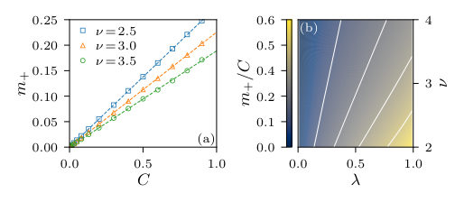
<figcaption class="paper-figure-caption"><b>Fig 4.</b> FIG. 4. (a) Post-upper-limit-close response m+ as a function of the return-limit magnitude C for λ = 0.5; dashed lines denote the analytical result (28). Symbols are obtained from stationary trajectories of length 1010 generated by numerical simulations using Student’s t driving shocks with degrees of freedom ν and scale parameter sϵ = 0.01 [see Appendix B]. (b) Limiting normalized response m+/C in the (λ, ν) plane obtained from Eq. (28).</figcaption>
</figure>
<figure class="paper-figure-card">
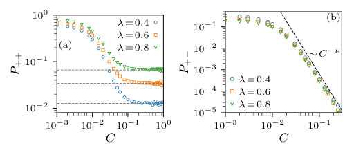
<figcaption class="paper-figure-caption"><b>Fig 5.</b> FIG. 5. (a) Same-limit persistence probability P++(C) and (b) opposite-limit reversal probability P+−(C) as functions of the return-limit magnitude C for ν = 3.5. Symbols are ob- tained from stationary trajectories of length 1010 generated by numerical simulations using Student’s t driving shocks with ν degrees of freedom and scale parameter sϵ = 0.01 [see Ap- pendix B]. The horizontal dashed lines in (a) show the wide- band limit in Eq. (32), while the dashed line in (b) shows the C−ν decay predicted by Eq. (33).</figcaption>
</figure>
</div>

<p><strong>Summary.</strong> This paper models financial returns subject to exchange price limits, treating the resulting 'hidden excess' as a latent variable that carries over time. By analyzing this memory mechanism using stochastic processes, it predicts how limit hits influence subsequent market behavior, showing persistent directional bias proportional to the band width.</p>
<p><strong>Why it may be interesting.</strong> While applied to finance, the core mathematical structure—modeling memory generation via unobserved state variables constrained by boundaries—is analogous to studying non-equilibrium dynamics or boundary effects in physical systems like charge transport or particle confinement.</p>
<details>
<summary>Detailed structure</summary>
<p><strong>Main problem.</strong> The study investigates how an unobserved 'hidden excess' generated by clipping extreme fluctuations (price limits) in financial markets generates memory in subsequent price movements, even when the underlying driving shocks are independent.</p>
<p><strong>Main result.</strong> In the wide-band limit, a limit close leads to a next-day mean return of the same sign that grows proportionally to the band width, and the probability of hitting the same limit again approaches a finite value.</p>
<p><strong>Method.</strong> The analysis employs a minimal stochastic latent-state model, deriving analytical results for stationary dynamics and performing asymptotic analyses in the wide-band limit.</p>
<p><strong>Model / system.</strong> The system models daily stock returns constrained by exchange-imposed symmetric price bands $[-C, C]$. The memory is introduced via a retention mechanism where a fraction of the unobserved excess from clipping is carried forward to influence the next day's latent return.</p>
<p><strong>Key observables.</strong> Next-day mean return sign/magnitude, persistence probability (same limit hit), and reversal probability (opposite limit hit).</p>
<p><strong>Important parameters / regimes.</strong> Band width ($C$), retention coefficient ($\lambda$), and the tail index ($
u$) of the driving shocks.</p>
<p><strong>Assumptions / limitations.</strong> The model assumes a latent-state process where the hidden excess is retained, and it utilizes the single-dominant-shock description in the wide-band limit.</p>
<p><strong>Figures summary.</strong> Figures illustrate information loss at limit closes (Fig 1), the renormalization of the stationary latent density amplitude due to retention (Fig 2), and representative trajectories showing persistent excess leading to consecutive limit closes (Fig 3).</p>
<p><strong>Paper structure.</strong> The paper develops a stochastic latent-state model for price-limited returns, analyzes its stationary dynamics under heavy tails, derives asymptotic results in the wide-band limit, and validates these predictions using simulations and empirical data from global indices.</p>
</details>
<details>
<summary>Abstract</summary>
<p>The daily return of a stock is often restricted to an exchange-imposed band to curb extreme fluctuations. Any attempted price movement beyond this band is clipped, leaving an unobserved excess. We introduce a minimal stochastic latent-state model in which a fraction of this hidden excess is retained for the next day. This retention generates memory, even though the daily stochastic driving shocks are independent. For symmetric driving shocks with regularly varying tails, the stationary latent return preserves the tail index of the noise, but has an enhanced tail amplitude. In the wide-band limit, a close of the daily return at either limit of the band admits a single-dominant-shock description. We show that after such an event, the mean return on the following day has the same sign and grows proportionally to the band width, while the probability of reaching the same limit again approaches a finite value. Reaching the opposite band limit on the following day requires a second extreme shock of opposite sign and is power-law suppressed. Simulations support these analytical predictions. Empirical data from stocks subject to daily price limits are qualitatively consistent with the predicted same-sign response and its increase across wider price bands.</p>
</details>
<p><sub><a href="#top">↑ back to top</a></sub></p>

<p><a id="paper-2608.09695"></a></p>
<h3 id="spread-of-entanglement-in-generalized-kicked-ising-chain"><a href="http://arxiv.org/abs/2608.09695v1">Spread of Entanglement in Generalized Kicked Ising Chain</a></h3>
<p><strong>Authors:</strong> Tanay Pathak, Hiromi Ebisu, Tomaž Prosen<br>
<strong>Type:</strong> theory · <strong>Category:</strong> statistical mechanics · <strong>PDF:</strong> <a href="https://arxiv.org/pdf/2608.09695v1">https://arxiv.org/pdf/2608.09695v1</a><br>
<strong>Analysis basis:</strong> full PDF text, analyzed in chunks
<strong>Topic relevance:</strong> <code>non-equilibrium universality</code> <strong>3/5</strong> · <code>analog quantum simulation</code> <strong>2/5</strong> · <code>driven-dissipative phase transition</code> <strong>2/5</strong> · <code>Keldysh / 2PI / non-Gaussian methods</code> <strong>1/5</strong> · <code>correlated / nonlocal dissipation</code> <strong>1/5</strong> · <code>methods for driven-dissipative</code> <strong>1/5</strong> · <code>scars &amp; prethermalization</code> <strong>1/5</strong></p>
<div class="figure-strip-hint">↔ Scroll figures horizontally</div>
<div class="paper-figures-scroll">
<figure class="paper-figure-card">
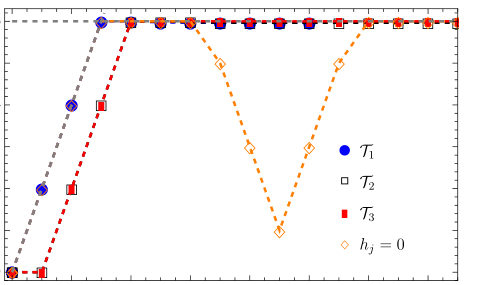
<figcaption class="paper-figure-caption"><b>Fig 1.</b> FIG. 1. Spread of entanglement for q = 3 KPM with L = 18, Eq. (11). We consider the initial states as the three type of solvable states T1, T2 and T3. Also shown is the results for T1 state but with hj = 0. The results for T2 and T3 states are delayed by one period.</figcaption>
</figure>
<figure class="paper-figure-card">
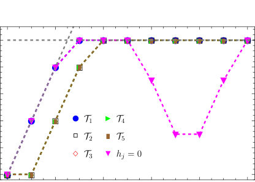
<figcaption class="paper-figure-caption"><b>Fig 2.</b> FIG. 2. Time evolution of von Neumann entanglement en- tropy for q = 4 model for a subsystem of N = 5 qudits in a system of L = 15 qudits KPM. The initial states are three type of solvable state T1, T2 and T3. Also shown is the results for T1 state but with hj = 0. The results for T2 and T3 states are delayed by one period.</figcaption>
</figure>
<figure class="paper-figure-card">
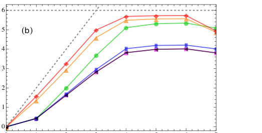
<figcaption class="paper-figure-caption"><b>Fig 3.</b> FIG. 4. Time evolution of von Neumann entanglement en- tropy for q = 3 model for a subsystem of N = 6 qutrits in a system of L = 18 qutrits KPM. The initial states are generic, |ψθ,χ,ϕ1,ϕ2⟩,and the corresponding parameter values are shown in the plots. (a)For hj = 1 (b)For hj = 0 which corresponds to integrable model.</figcaption>
</figure>
<figure class="paper-figure-card">
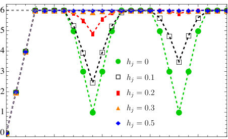
<figcaption class="paper-figure-caption"><b>Fig 4.</b> FIG. 3. Time evolution of von Neumann entanglement en- tropy for q = 3 model for a subsystem of N = 6 qutrits in a system of L = 18 qutrits KPM. For all the cases the initial state is of T1 type and we take different values for the longi- tudinal field.</figcaption>
</figure>
<figure class="paper-figure-card">
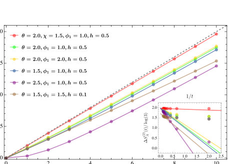
<figcaption class="paper-figure-caption"><b>Fig 5.</b> FIG. 5. Time evolution of Renyi-2 entanglement entropy for KPM with q = 3 in thermodynamic limit. The initial states are generic, |ψθ,χ,ϕ1,ϕ2⟩, and the corresponding parameter values are shown in the plots. We take θ = χ and ϕ1 = ϕ2 unless stated otherwise. The inset shows the instantaneous slope ∆S(α) A (t −1/2)[c.f. Eq. (93)], as a function of 1/t. The linear fit is obtained using values for t ≥5.</figcaption>
</figure>
</div>

<p><strong>Summary.</strong> This paper analyzes the dynamics of entanglement spread in an extended kicked Ising chain model, generalizing it from qubits to higher local dimensions. The core finding is that exact analytical solutions (dual-unitary points) are restricted to low dimensions ($q \le 4$). For solvable cases, the theory predicts linear growth of entanglement entropy until saturation at these special points.</p>
<p><strong>Why it may be interesting.</strong> It provides a rigorous theoretical framework for understanding quantum chaos and thermalization dynamics in extended lattice models by linking spectral properties (dual-unitarity) to entanglement scaling laws.</p>
<details>
<summary>Detailed structure</summary>
<p><strong>Main problem.</strong> The study investigates how entanglement spreads over time in a generalized kicked Ising chain, extending the model beyond standard qubits to higher local dimensions.</p>
<p><strong>Main result.</strong> Dual-unitary points, which allow for exact analytical solutions, only exist for local dimensions $q \le 4$, failing for $q \ge 5$ due to constraints on matrix elements. For solvable cases like $q=3$, entanglement entropy grows linearly with time at the dual-unitary point.</p>
<p><strong>Method.</strong> The analysis employs the transfer matrix method and a replica trick adapted for higher dimensions, alongside deriving specific conditions (Equation 30) that must be met for duality.</p>
<p><strong>Model / system.</strong> The system is the Generalized Kicked Ising Chain (KIM), which models quantum dynamics under periodic driving. It generalizes from qubits ($q=2$) to systems with local dimension $q>2$, corresponding to kicked Potts-type models for $q=3$.</p>
<p><strong>Key observables.</strong> Entanglement entropy (Rényi and von Neumann); the existence of 'dual-unitary' points.</p>
<p><strong>Important parameters / regimes.</strong> Local dimension ($q$), kicking strength ($b$), time ($t$).</p>
<p><strong>Assumptions / limitations.</strong> The analysis assumes that specific matrix element conditions must hold for dual-unitarity, which leads to contradictions for $q \ge 5$. For large $q$, summation is approximated by integration.</p>
<p><strong>Figures summary.</strong> Not specified in the notes; mentions Table I showing calculated values of $b$ for small $q$.</p>
<p><strong>Paper structure.</strong> The paper progresses from defining the generalized model and identifying the dual-unitarity condition via matrix elements, to proving its existence/non-existence based on $q$, and finally deriving exact expressions for entanglement growth in solvable cases.</p>
</details>
<details>
<summary>Abstract</summary>
<p>We investigate the dynamics of entanglement in a generalized version of the kicked Ising chain, extending the model from the standard qubit case (local dimension $q=2$) to higher local dimensions ($q > 2$). We identify the existence of ''dual-unitary'' points where the model's space-time duality allows for exact analytical solutions. Our analysis reveals that while a few unique dual-unitary points exist analytically for systems with local dimensions $q=3$ and $q=4$, such points do not exist for $q \ge 5$ due to the lack of a unique kicking strength that satisfies the required matrix element conditions. Utilizing the transfer matrix method and a replica trick specifically adapted for higher dimensions, we derive exact expressions for the growth of entanglement entropy in the $q=3$ (kicked Potts-type) model starting from a class of solvable initial states. Our results demonstrate that at the dual-unitary point, both Rényi and von Neumann entanglement entropies grow linearly with time until reaching a maximum value determined by the subsystem size.</p>
</details>
<p><sub><a href="#top">↑ back to top</a></sub></p>

<p><a id="paper-2608.07975"></a></p>
<h3 id="turning-angle-analysis-reveals-hidden-anisotropies-in-the-anomalous-diffusion-of-molecules-in-live-cells"><a href="http://arxiv.org/abs/2608.07975v1">Turning angle analysis reveals hidden anisotropies in the anomalous diffusion of molecules in live cells</a></h3>
<p><strong>Authors:</strong> Michał Balcerek, Adrian Pacheco-Pozo, Agnieszka Wyłomańska, Diego Krapf<br>
<strong>Type:</strong> both · <strong>Category:</strong> statistical mechanics · <strong>PDF:</strong> <a href="https://arxiv.org/pdf/2608.07975v1">https://arxiv.org/pdf/2608.07975v1</a><br>
<strong>Analysis basis:</strong> full PDF text, analyzed in chunks
<strong>Topic relevance:</strong> <code>quantum measurements</code> <strong>3/5</strong> · <code>driven-dissipative phase transition</code> <strong>2/5</strong> · <code>methods for driven-dissipative</code> <strong>2/5</strong> · <code>non-equilibrium universality</code> <strong>2/5</strong> · <code>correlated / nonlocal dissipation</code> <strong>1/5</strong> · <code>scars &amp; prethermalization</code> <strong>1/5</strong></p>
<div class="figure-strip-hint">↔ Scroll figures horizontally</div>
<div class="paper-figures-scroll">
<figure class="paper-figure-card">
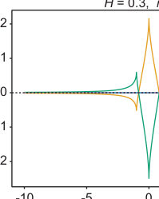
<figcaption class="paper-figure-caption"><b>Fig 1.</b> FIG. 1: Cross-covariance functions Cxy(h) of the increments of anisotropic 2D-FBM. The process has a subdiffusive Hurst exponent H = 0.3, anisotropy ratio r = 0.5, and D1 = 0.5. Four cases are shown: the process where the two components along x and y are independent (ϕ = 0), after the trajectories are rotated by ϕ = 60◦and ϕ = 135◦, and when each trajectory undergoes a random rotation with a uniformly distributed orientation (dotted line).</figcaption>
</figure>
<figure class="paper-figure-card">
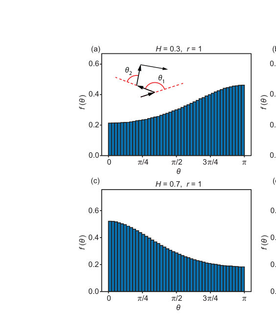
<figcaption class="paper-figure-caption"><b>Fig 2.</b> FIG. 2: Distribution of turning angles in simulated 2D-FBM trajectories. (a) Isotropic subdiffusive FBM, H = 0.3,r = 1. The inset illustrates the definition of turning angles θ. (b) Anisotropic subdiffusive FBM, H = 0.3,r = 0.2. (c) Isotropic superdiffusive FBM, H = 0.7,r = 1. (d) Anisotropic superdiffusive FBM, H = 0.7,r = 0.2.</figcaption>
</figure>
<figure class="paper-figure-card">

<figcaption class="paper-figure-caption"><b>Fig 3.</b> FIG. 3: Experimental trajectories in live cells. (a) Sample trajectories of quantum dots in the cytoplasm of HeLa cells, CD4 receptors, and Nav1.6 channels on the membrane of hippocampal neurons. Low- and high-mobility states identified using the local convex-hull method are shown in blue and yellow, respectively. (b–d) TA-MSD for the corresponding states and datasets. The dashed lines indicate linear scaling with lag time. (e–j) Ensemble cross-covariance functions of normalized increments for the high- and low-mobility states of the three experimental systems.</figcaption>
</figure>
<figure class="paper-figure-card">
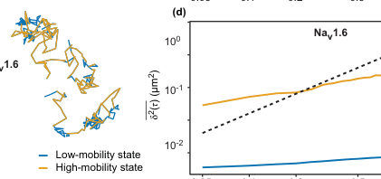
<figcaption class="paper-figure-caption"><b>Fig 4.</b> FIG. 4: Distributions of turning angle in experimental data. Probability density functions of the turning angles for (a) quantum dots, (b) CD4 receptors, and (c) Nav1.6 channels. The distributions are shown separately for the low- and high-mobility states.</figcaption>
</figure>
<figure class="paper-figure-card">
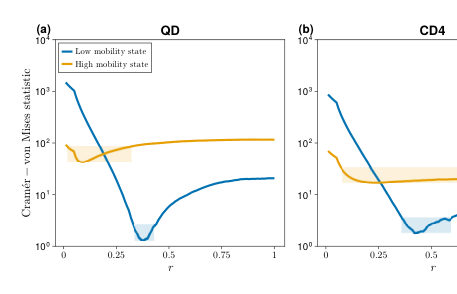
<figcaption class="paper-figure-caption"><b>Fig 5.</b> FIG. 5: Cramér–von Mises distance between the experimental turning-angle distributions and the corresponding simulated look-up tables. The distance is presented as a function of the anisotropy ratio r = D2/D1 for (a) quantum dots, (b) CD4 receptors, and (c) Nav1.6 channels. Results are shown for the low-mobility and high-mobility states. The shaded regions indicate the uncertainty ranges defined by values of r for which the Cramér–von Mises statistic does not exceed twice its minimum value.</figcaption>
</figure>
</div>

<p><strong>Summary.</strong> This work introduces turning-angle analysis as a powerful, rotationally invariant technique to detect hidden spatial anisotropies in the anomalous diffusion of molecules inside living cells. By modeling motion with 2D Fractional Brownian Motion, the authors show that analyzing the distribution of molecular turning angles allows for the robust quantification of directional biases ($r$), overcoming limitations posed by noisy or randomly oriented experimental trajectories.</p>
<p><strong>Why it may be interesting.</strong> While focused on biophysics, the methodology—using intrinsic geometric invariants (turning angles) to extract directional information from noisy, randomly oriented measurements—is highly relevant to analyzing complex dynamics in non-equilibrium statistical mechanics systems where global symmetries are broken locally.</p>
<details>
<summary>Detailed structure</summary>
<p><strong>Main problem.</strong> The primary challenge is uncovering hidden spatial anisotropies in the anomalous diffusion of molecules within live cells, which is difficult because measured trajectories are often short, noisy, and randomly oriented.</p>
<p><strong>Main result.</strong> Turning-angle analysis successfully reveals hidden anisotropic features in molecular motion (e.g., quantum dots, membrane proteins), demonstrating that this approach is robust even when conventional methods fail due to random environmental orientations.</p>
<p><strong>Method.</strong> The authors utilize turning-angle statistics—a rotationally invariant diagnostic tool—applied to 2D Fractional Brownian Motion models to quantify the degree and direction of anisotropy in diffusion processes.</p>
<p><strong>Model / system.</strong> The study analyzes molecular motion within complex biological environments, using single-particle tracking data from quantum dots in HeLa cells and membrane proteins in hippocampal neurons. The underlying physics is modeled by anisotropic 2D Fractional Brownian Motion (FBM).</p>
<p><strong>Key observables.</strong> Turning angle distribution $f(\theta)$, the anisotropy ratio ($r = D_2/D_1$), and statistical distance metrics like Cramér–von Mises (CvM) distance.</p>
<p><strong>Important parameters / regimes.</strong> Anomalous diffusion exponent ($\alpha$) and Hurst exponent ($H$); the anisotropy ratio $r$; random rotation angle $\Phi$.</p>
<p><strong>Assumptions / limitations.</strong> The analysis assumes that averaging over random orientations ($\Phi \sim U(0, 2\pi)$) causes certain cross-correlations to vanish, allowing turning angles to isolate intrinsic directional biases.</p>
<p><strong>Figures summary.</strong> Figures illustrate how cross-covariance functions are affected by rotation and show the dependence of turning angle distributions on anisotropy ($r$) and diffusion regime (sub/superdiffusive FBM). Supplementary figures detail the workflow for estimating $r$ using multiple statistical distance measures.</p>
<p><strong>Paper structure.</strong> The paper first establishes the limitations of conventional methods, then introduces the turning-angle analysis based on 2D-FBM modeling. It details the mathematical framework for anisotropic processes under rotation and concludes by applying this robust method to analyze experimental single-particle tracking data to quantify anisotropy.</p>
</details>
<details>
<summary>Abstract</summary>
<p>Molecular motion within living cells provides a window into the physical principles underlying intracellular organization and transport. Yet a fundamental limitation remains: measured trajectories are often short, noisy, and randomly oriented, rendering spatial anisotropies inaccessible to conventional analyses. We show that turning-angle statistics provide a robust approach for uncovering anisotropies in anomalous diffusion. Using a two-dimensional anisotropic fractional Brownian motion model with random orientations, we show theoretically and through simulations that turning-angle distributions preserve signatures of anisotropy. We apply this approach to single-particle tracking data, including quantum dots in the cytoplasm of HeLa cells and membrane proteins in hippocampal neurons. Turning angles reveal hidden anisotropies in the motion of quantum dots and Nav 1.6 channels, and in specific dynamical states of glycoprotein CD4. These results establish turning-angle analysis as a powerful strategy for detecting organization in complex environments and reveal that anisotropic anomalous diffusion is an overlooked feature of intracellular dynamics.</p>
</details>
<p><sub><a href="#top">↑ back to top</a></sub></p>

<p><a id="paper-2608.09509"></a></p>
<h3 id="gate-based-emulation-of-boson-sampling-using-photonic-qubits"><a href="http://arxiv.org/abs/2608.09509v1">Gate-based emulation of boson sampling using photonic qubits</a></h3>
<p><strong>Authors:</strong> Aastha P. Zalone, S. P. Dinesh, C. M. Chandrashekar<br>
<strong>Type:</strong> both · <strong>Category:</strong> quantum information and computing · <strong>PDF:</strong> <a href="https://arxiv.org/pdf/2608.09509v1">https://arxiv.org/pdf/2608.09509v1</a><br>
<strong>Analysis basis:</strong> full PDF text, analyzed in chunks
<strong>Topic relevance:</strong> <code>interference shaping light</code> <strong>3/5</strong> · <code>analog quantum simulation</code> <strong>2/5</strong> · <code>Full counting statistics</code> <strong>1/5</strong> · <code>QC/QI experiment</code> <strong>1/5</strong> · <code>methods for driven-dissipative</code> <strong>1/5</strong> · <code>quantum measurements</code> <strong>1/5</strong> · <code>quantum optics experiment</code> <strong>1/5</strong></p>
<div class="figure-strip-hint">↔ Scroll figures horizontally</div>
<div class="paper-figures-scroll">
<figure class="paper-figure-card">
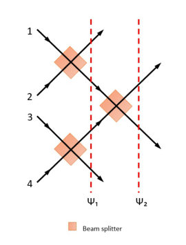
<figcaption class="paper-figure-caption"><b>Fig 1.</b> FIG. 5: Schematic representation of the four-mode linear optical interferometer composed of three balanced beam splitters. The first interferometric stage consists of beam splitters B12 and B34 acting on modes (1, 2) and (3, 4), respectively, producing the intermediate state |ψ1⟩. The second stage comprises beam splitter B23 acting on the central modes (2, 3), resulting in the final output state |ψ2⟩.</figcaption>
</figure>
<figure class="paper-figure-card">
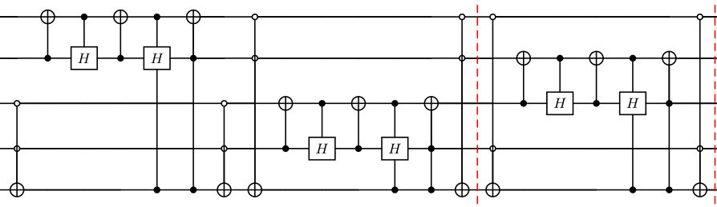
<figcaption class="paper-figure-caption"><b>Fig 2.</b> FIG. 6: Generalized input-independent quantum circuit corresponding to the four-mode two-photon interferometer. Each optical beam splitter is replaced by the encoded two-photon beam-splitter unit derived in Sec. IV. Ancilla-assisted spectator-mode identification activates the local transformation only within the corresponding two-photon interference subspace. The circuit reproduces the complete four-mode evolution for all physical input states in the encoded Hilbert space.</figcaption>
</figure>
<figure class="paper-figure-card">
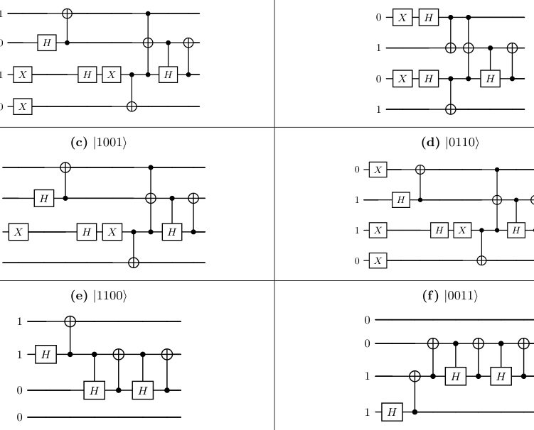
<figcaption class="paper-figure-caption"><b>Fig 3.</b> FIG. 7: Optimized quantum circuits corresponding to the six input states of the four-mode interferometer. Qubits q0, q1, and q3 represent path qubits, whereas q2 represents the polarization qubit. Here, H and X denote the Hadamard and Pauli-X gates, respectively.</figcaption>
</figure>
<figure class="paper-figure-card">
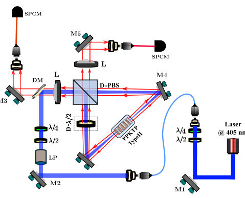
<figcaption class="paper-figure-caption"><b>Fig 4.</b> FIG. 8: Schematic of the experimental setup for heralded single-photon generation. The remaining optical arrangement constitutes a standard type-II Sagnac interferometer. λ/2, half-wave plates; λ/4, quarter-wave plates; LP, linear polarizer; L, lens of focal length 20 cm; M1–M5, mirrors; D-PBS, dual-wavelength polarizing beam splitter; DM, dichroic mirror; PPKTP, periodically poled potassium titanyl phosphate crystal; FC, fibre couplers; SPCM, single-photon counting modules. The blue thick line indicates the 405 nm pump laser, while the red lines indicate the down-converted photons at 810 nm.</figcaption>
</figure>
<figure class="paper-figure-card">
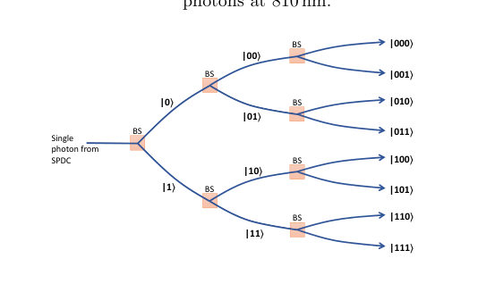
<figcaption class="paper-figure-caption"><b>Fig 5.</b> FIG. 9: Three-layered balanced beam-splitter network mapping a single photon in eight spatial modes onto the computational basis states |000⟩–|111⟩of three path-encoded qubits. Each binary label records the sequence of path choices through the network.</figcaption>
</figure>
</div>

<p><strong>Summary.</strong> This paper presents a comprehensive method to simulate boson sampling, a key problem in quantum computation, using only universal gate-based photonic qubits. The authors overcome the fundamental mismatch between bosonic Fock states and qubit representations by developing an ancilla-assisted encoding scheme. This allows for the systematic construction of circuits representing arbitrary linear optical interferometers.</p>
<p><strong>Why it may be interesting.</strong> This work provides a concrete, algorithmic blueprint for simulating complex bosonic quantum phenomena—which are often difficult to model classically due to the permanent calculation—on near-term gate-based hardware architectures.</p>
<details>
<summary>Detailed structure</summary>
<p><strong>Main problem.</strong> The primary goal is developing a scalable quantum-circuit framework to simulate boson sampling, which arises from multiphoton interference in linear optics, on universal gate-based quantum computers.</p>
<p><strong>Main result.</strong> The authors successfully translate the Fock-space dynamics of bosonic interferometers into an equivalent, systematic sequence of elementary qubit gates, demonstrated for a four-mode system.</p>
<p><strong>Method.</strong> They derive circuit implementations by encoding multi-qubit bosonic states onto qubits and generalizing beam splitter transformations using repeating quantum-circuit units acting within specific local interference subspaces.</p>
<p><strong>Model / system.</strong> The model is boson sampling realized via linear-optical interferometers. The simulation maps the physics from the natural Fock basis to a universal qubit computational basis, requiring an ancilla-assisted encoding for generalization.</p>
<p><strong>Key observables.</strong> Transition probabilities $P(\mathbf{n} 	o \mathbf{s})$ and the permanent of submatrices of the interferometer unitary ($ ext{Perm}(U_{\mathbf{s},\mathbf{n}})$).</p>
<p><strong>Important parameters / regimes.</strong> The required qubit count scales linearly with the number of modes ($N+1$ qubits for $N$ modes in some contexts); the complexity is related to the permanent calculation.</p>
<p><strong>Assumptions / limitations.</strong> The core assumption is that a systematic mapping exists to represent all linear-optical transformations using standard quantum gates, even when bridging the gap between Fock and qubit bases.</p>
<p><strong>Figures summary.</strong> Figures illustrate the circuit representation of beam splitters in single-photon, two-photon, and unified Hilbert spaces. A schematic shows the structure of an $N$-mode interferometer built from these repeating units.</p>
<p><strong>Paper structure.</strong> The paper progresses by first analyzing the fundamental building block (beam splitter) for low photon numbers (single/two-photon sectors), unifying this into a general circuit unit, and finally generalizing this unit to construct arbitrary multi-mode interferometers using scalable encoding schemes.</p>
</details>
<details>
<summary>Abstract</summary>
<p>Boson sampling arising from multiphoton interference in linear-optical networks is a prominent non-universal model for quantum computation. Here, by encoding the multi-qubit state to bosonic Fock state, we present a scalable quantum-circuit framework for simulating boson sampling on a universal quantum computing platform. Beginning with balanced beam-splitter transformations on the single- and two-photon sectors, we derive equivalent quantum-circuit implementations and unify them within a common Hilbert-space representation using an ancilla-assisted encoding. This construction is then generalized to arbitrary interferometers by replacing each optical beam splitter with a repeating quantum-circuit unit that selectively acts only within the relevant local interference subspace, requiring $N+1$ qubits for a two-photon $N$-mode interferometer and a linear-overhead subspace-identification procedure. Using this framework, gate-based quantum circuit for a four-mode boson-sampling circuit is developed and experimentally implemented on a four-qubit gate-based photonic qubit system. The qubit framework for emulating boson sampling of $n-$photons in $m-$mode will be useful to solve a broad class of sampling complexity problem on a gate-based quantum computers.</p>
</details>
<p><sub><a href="#top">↑ back to top</a></sub></p>

<p><a id="paper-2608.09245"></a></p>
<h3 id="gradient-based-optimization-of-non-abelian-fractional-quantum-states-in-patterned-superlattices"><a href="http://arxiv.org/abs/2608.09245v1">Gradient-based optimization of non-Abelian fractional quantum states in patterned superlattices</a></h3>
<p><strong>Authors:</strong> Yifei Guan, Lichen Yu, Zizhuang Liu, Xin Lu, Jianpeng Liu<br>
<strong>Type:</strong> theory · <strong>Category:</strong> strongly correlated electrons · <strong>PDF:</strong> <a href="https://arxiv.org/pdf/2608.09245v1">https://arxiv.org/pdf/2608.09245v1</a><br>
<strong>Analysis basis:</strong> full PDF text, analyzed in chunks
<strong>Topic relevance:</strong> <code>analog quantum simulation</code> <strong>3/5</strong> · <code>methods for driven-dissipative</code> <strong>3/5</strong> · <code>quantum measurements</code> <strong>2/5</strong> · <code>Keldysh / 2PI / non-Gaussian methods</code> <strong>1/5</strong> · <code>driven-dissipative phase transition</code> <strong>1/5</strong></p>
<div class="figure-strip-hint">↔ Scroll figures horizontally</div>
<div class="paper-figures-scroll">
<figure class="paper-figure-card">
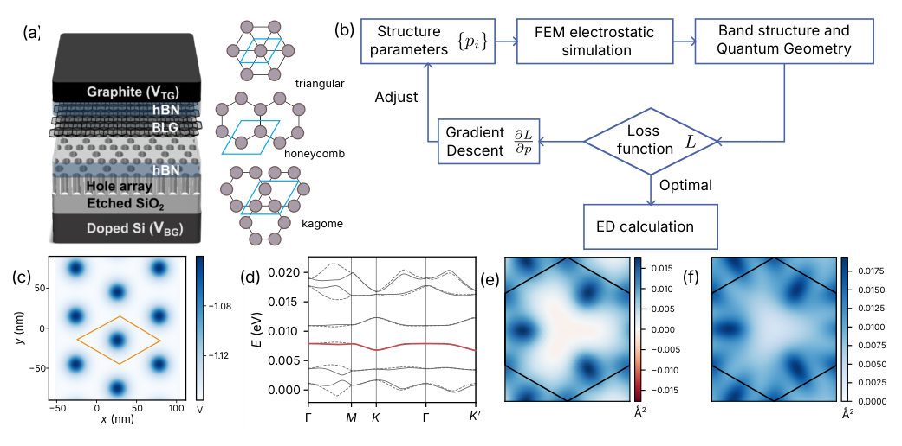
<figcaption class="paper-figure-caption"><b>Fig 1.</b> FIG. 1. (a) The left panel shows the superlattice device: bilayer graphene is encapsulated by thin hBN layers. A periodically etched SiO2 substrate provides a periodic modulation of the vertical electric potential drop between the top and bottom gates. The right panel shows schematic diagrams of the superlattices with triangular, honeycomb, and kagome patterns. (b) Illustration of the optimization workflow: the gradient of the loss function with respect to the structural parameters {pi} is calculated using finite differences. Each iteration involves an FEM simulation of the electrostatic potential and a solution of the electronic structure using a realistic continuum model of BLG to...</figcaption>
</figure>
<figure class="paper-figure-card">
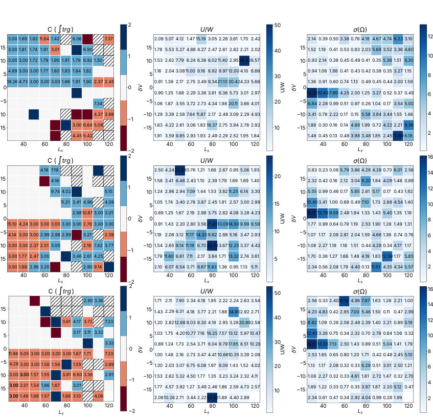
<figcaption class="paper-figure-caption"><b>Fig 2.</b> FIG. 2. Single-particle phase diagrams of the gradient-optimized superlattice structures for (a) triangular, (b) honeycomb, and (c) kagome patterned superlattices in the parameter space spanned by the superlattice constant Ls and gate-voltage difference δV . The color coding of the subfigures in the first column indicates the Chern numbers of the highest valence bands in the K valley, while the number at each parameter point gives the numerical value of R</figcaption>
</figure>
<figure class="paper-figure-card">
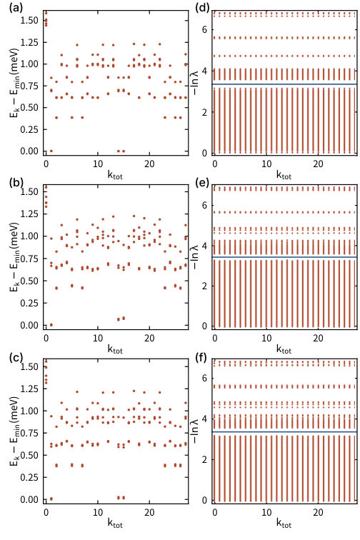
<figcaption class="paper-figure-caption"><b>Fig 3.</b> FIG. 3. The many-body spectrum and PES of the Moore- Read FCI phase, calculated with Nk = 28, Ne = 14. (a)-(c) show the energy spectra for (a) triangular superlattice with Ls = 50nm, δV = 14V; (b) honeycomb superlattice with Ls = 40nm, δV = −14V; and (c) kagome superlattice with Ls = 50nm, δV = −12V. (d)-(f) present the corresponding PES calculated by a partition NA = 4, NB = 10 of the 14 electrons.</figcaption>
</figure>
<figure class="paper-figure-card">
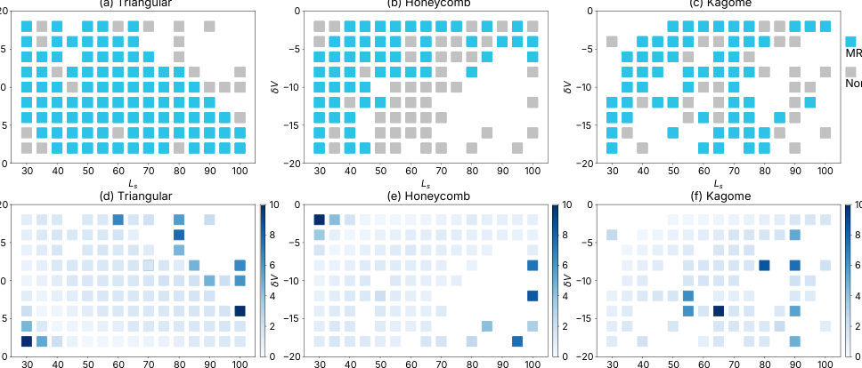
<figcaption class="paper-figure-caption"><b>Fig 4.</b> FIG. 4. Many-body phase diagrams of the HVB at 1/2 filling in the (Ls, δV ) parameter space for (a) triangular, (b) honeycomb, and (c) kagome patterned superlattices coupled to bilayer graphene. Moore-Read FCI states are colored light blue, the gray blocks denote many-body states that are not Moore-Read FCIs, and the white regions indicate parameter points at which the Chern number of the HVB is not ±1 and the many-body ground state was therefore not calculated. (d)–(f) show the converged values of the loss function defined in Eq. (2) for the triangular, honeycomb, and kagome superlattices, respectively.</figcaption>
</figure>
</div>

<p><strong>Summary.</strong> The paper presents a novel, computationally intensive workflow to engineer non-Abelian Fractional Chern Insulator states in patterned superlattices on bilayer graphene. By using gradient descent to optimize structural parameters based on desired topological band geometry, the authors successfully demonstrated the realization of these exotic correlated phases across multiple lattice types.</p>
<p><strong>Why it may be interesting.</strong> This work provides a concrete, device-level inverse design methodology for engineering exotic topological phases. The combination of continuum modeling, optimization theory (gradient descent), and many-body physics makes it highly relevant for theorists studying engineered quantum matter systems.</p>
<details>
<summary>Detailed structure</summary>
<p><strong>Main problem.</strong> The primary challenge addressed is realizing non-Abelian Fractional Chern Insulator (FCI) states, moving beyond the typically observed Abelian FCI states in moiré heterostructures.</p>
<p><strong>Main result.</strong> The authors established an experimentally feasible framework by developing a gradient-optimization workflow that successfully designs patterned superlattices to host robust non-Abelian FCI states across multiple lattice geometries.</p>
<p><strong>Method.</strong> A gradient-descent algorithm is employed, coupling Finite-Element Method (FEM) simulations for electrostatics with continuum k.p model calculations to optimize structural parameters based on a loss function targeting specific quantum geometric properties.</p>
<p><strong>Model / system.</strong> The system involves bilayer graphene coupled to patterned dielectric superlattices (triangular, honeycomb, kagome). The electronic structure is modeled using the k.p Hamiltonian modified by a superlattice potential, and many-body physics is analyzed via Exact Diagonalization (ED) at half filling.</p>
<p><strong>Key observables.</strong> Chern number ($C=\pm 1$), quantum metric ($  ext{tr } g(\mathbf{k})$), Berry curvature standard deviation ($\sigma(\Omega)$), and the Particle Entanglement Spectrum (PES).</p>
<p><strong>Important parameters / regimes.</strong> Superlattice structural parameters like hole radius ($
ho_{hole}$) and depth ($h_{hole}$); filling fraction $
u=1/2$; ratio of Coulomb interaction energy to bandwidth ($U/W$).</p>
<p><strong>Assumptions / limitations.</strong> The optimization relies on the loss function penalizing deviations from ideal quantum geometry, implicitly assuming that suppressing Berry curvature fluctuations is sufficient to maintain a flat band.</p>
<p><strong>Figures summary.</strong> Figures illustrate the device setup and the gradient-descent workflow. Results show optimized potential profiles, band structures confirming $|C|=1$ flat bands, and PES calculations demonstrating signatures of the Moore-Read FCI phase in the ground state manifold.</p>
<p><strong>Paper structure.</strong> The paper first introduces the physical platform (patterned superlattices on BLG) and the goal (non-Abelian FCI). It details a gradient-optimization workflow using FEM/k.p models to tune structural parameters $\{p_i\}$ by minimizing a loss function $L$. Finally, it applies this optimized structure to perform ED calculations to confirm the emergence of the Moore-Read state.</p>
</details>
<details>
<summary>Abstract</summary>
<p>The realization of fractional Chern insulator (FCI) states in moiré heterostructures has attracted intense interest in the study of correlated states emerging from topological flat bands. So far, most experimentally realized FCI states may be interpreted as lattice analogues of fractional quantum Hall (FQH) states hosting Abelian anyonic excitations. Realizing non-Abelian FCI states is an important challenge in the field. Patterned dielectric superlattices provide a versatile platform for engineering topological flat bands. Such systems offer substantial structural flexibility and tunability, because their lattice patterns, periods, and other structural parameters can all be designed and fabricated. Here we propose to realize non-Abelian FCI states in patterned dielectric superlattices coupled to bilayer graphene. Specifically, we provide a realistic workflow based on a gradient-descent algorithm to design non-Abelian fractional states in bilayer graphene superlattices. The experimentally relevant structural parameters of the superlattices are gradient-optimized to favor a flat Chern band with quantum-geometric properties reminiscent of those of the first excited Landau level. Exact diagonalization calculations at 1/2 filling of the optimized flat Chern band naturally yield non-Abelian FCI states. We apply this workflow to triangular, honeycomb, and kagome patterned superlattices and find robust non-Abelian FCI states over a large region of the parameter space spanned by the superlattice constant and vertical potential drop. Our work thus establishes an experimentally feasible framework for exploring non-Abelian FCIs in realistic patterned-superlattice devices. It also demonstrates the potential of device-level inverse design to engineer correlated topological matter beyond the Abelian paradigm.</p>
</details>
<p><sub><a href="#top">↑ back to top</a></sub></p>

<p><a id="paper-2608.08687"></a></p>
<h3 id="point-gap-topology-in-amorphous-non-hermitian-quantum-systems"><a href="http://arxiv.org/abs/2608.08687v1">Point-gap topology in amorphous non-Hermitian quantum systems</a></h3>
<p><strong>Authors:</strong> Xue-Min Yang, Deng-Feng Li, Jian Li, Jia-Ji Zhu, Li Li, Qiu-Chi Chen, Xin-Qi Xu, Hao-Peng Zhang, Hong Wu<br>
<strong>Type:</strong> theory · <strong>Category:</strong> disordered systems and neural networks · <strong>PDF:</strong> <a href="https://arxiv.org/pdf/2608.08687v1">https://arxiv.org/pdf/2608.08687v1</a><br>
<strong>Analysis basis:</strong> full PDF text, analyzed in chunks
<strong>Topic relevance:</strong> <code>analog quantum simulation</code> <strong>3/5</strong> · <code>methods for driven-dissipative</code> <strong>3/5</strong> · <code>driven-dissipative phase transition</code> <strong>2/5</strong> · <code>correlated / nonlocal dissipation</code> <strong>1/5</strong> · <code>quantum measurements</code> <strong>1/5</strong></p>
<div class="figure-strip-hint">↔ Scroll figures horizontally</div>
<div class="paper-figures-scroll">
<figure class="paper-figure-card">
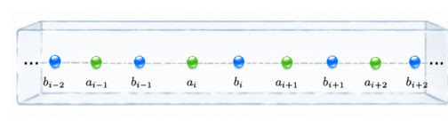
<figcaption class="paper-figure-caption"><b>Fig 1.</b> FIG. 1. Schematics of the amorphous model on a chain.</figcaption>
</figure>
<figure class="paper-figure-card">
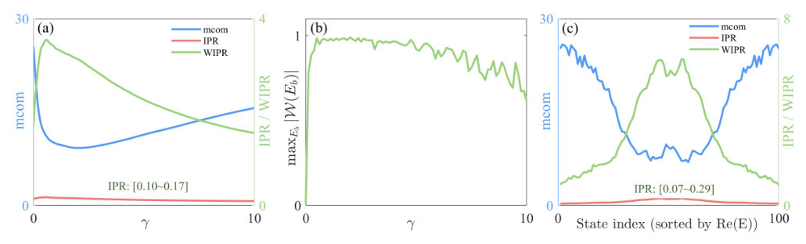
<figcaption class="paper-figure-caption"><b>Fig 2.</b> FIG. 2. Characterization of the non-Hermitian skin effect via IPR, WIPR, mcom, and the real-space winding number for the amorphous chain (t = 1). (a) Disorder-averaged mcom, IPR, and WIPR as functions of γ ∈[0, 10] for L = 50 unit cells. (b) Maximum absolute value of the real-space spectral winding number maxEb |W(Eb)| as a function of γ for L = 50 unit cells, averaged over 50 disorder realizations per γ point, with Eb scanned over Re(Eb) ∈[−5, 5] and Im(Eb) ∈[−(γ + 1), γ + 1]. (c) Disorder-averaged mcom, IPR, and WIPR versus the state index (sorted by Re(E)) at fixed γ = 0.2 for L = 50 unit cells.</figcaption>
</figure>
<figure class="paper-figure-card">
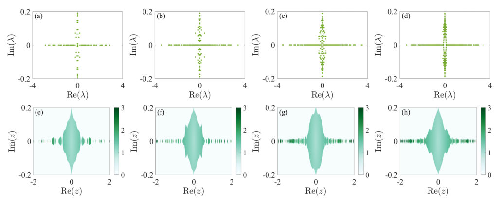
<figcaption class="paper-figure-caption"><b>Fig 3.</b> FIG. 3. Eigenvalue spectra and pseudospectra of the 1D non-Hermitian amorphous chain defined by Eq. (1) for increasing system sizes with independent disorder realization. (a)–(d) Eigenvalues λ in the complex plane for systems with L = 50, 100, 150, and 200 unit cells, respectively. The hopping parameters are tij = t e−|xi−xj|/2 with t = 1, γ = 0.2, and random positions xi ∈[0, 2L] subject to a minimum spacing dmin = 0.05. (e)–(h) Corresponding ε-pseudospectra with ε = 10−2, where each dot marks z ∈C satisfying smin(zI −H) &lt; ε, sampled on a grid Re(z), Im(z) ∈[−2, 2] with spacing 0.005.</figcaption>
</figure>
<figure class="paper-figure-card">
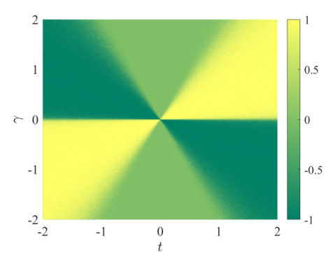
<figcaption class="paper-figure-caption"><b>Fig 4.</b> FIG. 5. Topological phase diagram of the 1D non-Hermitian amorphous chain in the (t, γ) plane, obtained from the real- space SVD winding number V(0). The system has L = 50 unit cells with random positions xi ∈[0, 100] and minimum spacing dmin = 0.05. The result is averaged over 100 indepen- dent disorder realizations for all (t, γ) points on a 200 × 200 grid spanning t, γ ∈[−2, 2]. The color encodes the winding number V(0).</figcaption>
</figure>
<figure class="paper-figure-card">
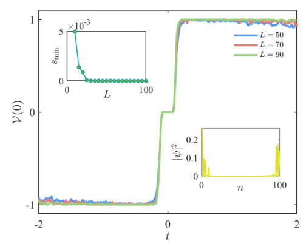
<figcaption class="paper-figure-caption"><b>Fig 5.</b> FIG. 4. Winding number V(0) of the amorphous chain as a function of the hopping amplitude t for different numbers of unit cells L = 50, 70, 90, computed via the SVD-based invari- ant [Eq. (11)] with γ = 0.2, averaged over 1000 disorder real- izations. Lower-right inset: spatial distribution |ψ|2= |vn|2 of the zero-mode singular vector at t = −1.5. Upper-left inset: the smallest singular value as a function of L at t = −1.5.</figcaption>
</figure>
</div>

<p><strong>Summary.</strong> This work addresses the instability of energy spectra in amorphous non-Hermitian quantum systems when searching for topological edge states. The authors overcome this by introducing a novel diagnostic tool based on the Singular Value Decomposition (SVD) of the Hamiltonian. This SVD approach yields a robust, real-space topological invariant that successfully characterizes point-gap topology and redefines how the Non-Hermitian Skin Effect is understood in disordered settings.</p>
<p><strong>Why it may be interesting.</strong> The development of a singular value based, disorder-robust diagnostic tool for topology is highly valuable for AMO physics, as it provides a reliable way to characterize topological phases in realistic, disordered experimental setups (e.g., cold atoms or photonic lattices).</p>
<details>
<summary>Detailed structure</summary>
<p><strong>Main problem.</strong> Identifying stable topological edge states in amorphous non-Hermitian quantum systems is challenging because the energy spectrum is highly sensitive to perturbations, system size, and boundary conditions.</p>
<p><strong>Main result.</strong> The authors establish a robust correspondence between stable zero-mode singular states and mid-gap states by constructing a real-space topological invariant using Singular Value Decomposition (SVD).</p>
<p><strong>Method.</strong> They utilize the SVD of the Hamiltonian to construct a real-space topological invariant, which is shown to be robust against perturbations, unlike traditional eigenvalue-based methods.</p>
<p><strong>Model / system.</strong> The study focuses on one-dimensional amorphous non-Hermitian quantum systems modeled by a lattice with randomly distributed sites and governed by a specific hopping Hamiltonian incorporating nonreciprocal terms ($\gamma$).</p>
<p><strong>Key observables.</strong> Mean Center of Mass (mcom), Weighted Inverse Participation Ratio (WIPR), and the real-space topological invariant $V(E_b)$ derived from singular values.</p>
<p><strong>Important parameters / regimes.</strong> Nonreciprocal hopping strength ($\gamma$), system size ($L$), and reference energy ($E_b$).</p>
<p><strong>Assumptions / limitations.</strong> The analysis relies on establishing a correspondence between stable zero-mode singular states in the thermodynamic limit and observable mid-gap topological features.</p>
<p><strong>Figures summary.</strong> Figures illustrate spectral instability using pseudospectra, show how mcom and WIPR signal the Non-Hermitian Skin Effect (NHSE) as $\gamma$ changes, and map out quantized topological phase boundaries using $V(E_b)$.</p>
<p><strong>Paper structure.</strong> The paper first diagnoses the failure of traditional methods due to spectral instability in amorphous systems. It then introduces the SVD-based framework to define a robust real-space topological invariant ($V(E_b)$) that successfully predicts point-gap topology and redefines the non-Hermitian skin effect.</p>
</details>
<details>
<summary>Abstract</summary>
<p>Recent studies have revealed that not only does the correspondence between spectral winding numbers and skin modes break down in non-Hermitian systems, but the energy spectrum itself is highly sensitive to generic perturbations, system size, and boundary conditions. In amorphous non-Hermitian systems, where the positions of lattice sites are uncertain, the spectral instability becomes even more severe, making it difficult to identify stable topological edge states from the eigenvalue spectrum alone. To overcome this challenge, we introduce a correspondence between stable zero-mode singular states and mid-gap states of the energy spectrum in the thermodynamic limit. Because the singular value spectrum is highly robust against small perturbations and variation in size, topological edge states can be reliably probed via singular values even in finite-sized systems. Based on the singular-value decomposition of the Hamiltonian, we construct a topological invariant in real space to characterize the associated topologically protected edge states. Our approach provides a general strategy for exploring point-gap topology in real space and redefine the non-Hermitian skin effect from a new perspective.</p>
</details>
<p><sub><a href="#top">↑ back to top</a></sub></p>

<p><a id="paper-2608.09496"></a></p>
<h3 id="autoregressive-projective-quantum-monte-carlo-from-a-hermitian-to-a-non-hermitian-perspective"><a href="http://arxiv.org/abs/2608.09496v1">Autoregressive Projective Quantum Monte Carlo: From a Hermitian to a Non-Hermitian Perspective</a></h3>
<p><strong>Authors:</strong> Lavoisier Wah, Remmy Zen, Flore K. Kunst<br>
<strong>Type:</strong> theory · <strong>Category:</strong> numerical methods · <strong>PDF:</strong> <a href="https://arxiv.org/pdf/2608.09496v1">https://arxiv.org/pdf/2608.09496v1</a><br>
<strong>Analysis basis:</strong> full PDF text, analyzed in chunks
<strong>Topic relevance:</strong> <code>methods for driven-dissipative</code> <strong>3/5</strong> · <code>analog quantum simulation</code> <strong>2/5</strong> · <code>quantum measurements</code> <strong>2/5</strong> · <code>Keldysh / 2PI / non-Gaussian methods</code> <strong>1/5</strong> · <code>driven-dissipative phase transition</code> <strong>1/5</strong></p>
<div class="figure-strip-hint">↔ Scroll figures horizontally</div>
<div class="paper-figures-scroll">
<figure class="paper-figure-card">
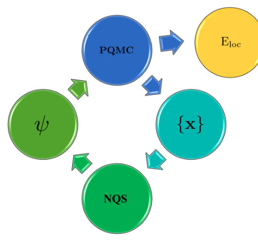
<figcaption class="paper-figure-caption"><b>Fig 1.</b> Figure 1: PQMC guided by an NQS. We represent a simplified schematic plot of the PQMC guided by an NQS. Here, the NQS uses the set of walkers {x} from the PQMC to train an ansatz ψ, which should be a “good” approximation of the target ground state. This ansatz is then used to guide the PQMC simulation and to compute the local energies Eloc. The ground state energy is obtained by averaging these local energies.</figcaption>
</figure>
<figure class="paper-figure-card">
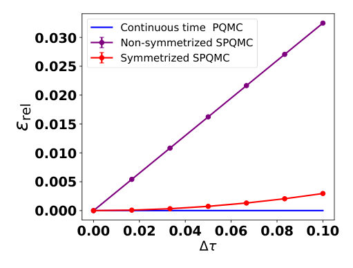
<figcaption class="paper-figure-caption"><b>Fig 2.</b> Figure 2: Bias due to time step. The relative error εrel is plotted against the imaginary time step ∆τ for the continuous-time PQMC (blue), symmetrized SPQMC (red), and non-symmetrized SPQMC (purple). The simulation is performed for Nw = 103 walkers, and N = 20 spins. For continuous-time PQMC, a blue line is provided to guide the eye, as fitting is not meaningful in this case. The symmetrized SPQMC curve is fitted with a quadratic function ax2, with optimal parameter a = 0.285(7), and the non-symmetrized SPQMC curve is fitted with a linear function ax, with optimal parameter a = 0.263(5). The Hermitian Ising chain in Eq. (9) is considered.</figcaption>
</figure>
<figure class="paper-figure-card">
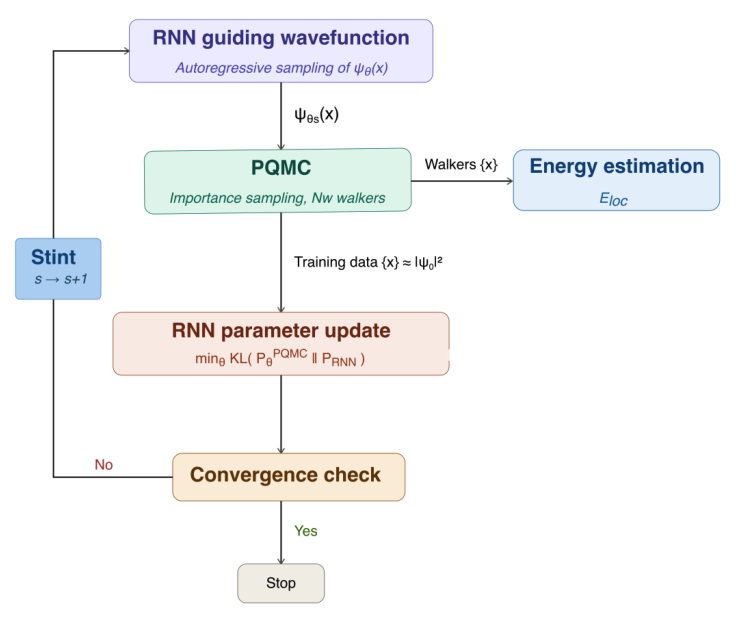
<figcaption class="paper-figure-caption"><b>Fig 3.</b> Figure 3: Autoregressive PQMC. We show a schematic plot of self-learning PQMC guided by an RNN. θ are the RNN parameters.</figcaption>
</figure>
<figure class="paper-figure-card">
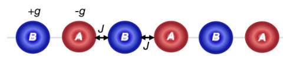
<figcaption class="paper-figure-caption"><b>Fig 4.</b> Figure 4: Hermitian 1D Ising chain with alternating magnetic field. A (red) and B (blue) represent the sublattices in which spin-1/2 particles occupy the odd and even positions, respectively. The transverse field +g (−g) is applied to the B (A) sublattices. Nearest-neighbor coupling J is considered.</figcaption>
</figure>
<figure class="paper-figure-card">
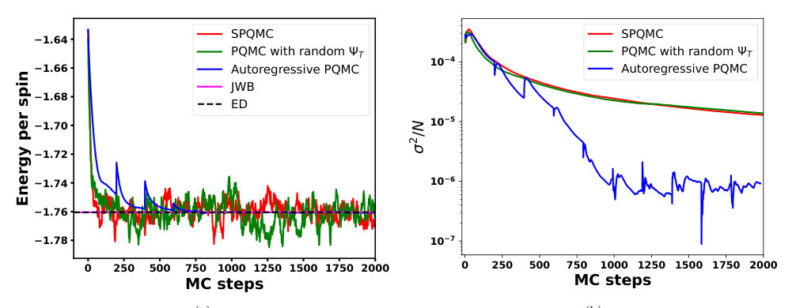
<figcaption class="paper-figure-caption"><b>Fig 5.</b> Figure 5: Autoregressive PQMC vs SPQMC and ED. We plot (a) the energy per spin with SPQMC (red), and PQMC using a random ψT (green) for ∆τ = 10−2, g = 1.6, Nw = 2 × 104, MCs = 2 × 103, and the projection time ∆τp = MCs × ∆τ = 20. The energy per spin obtained using autoregressive PQMC guided by the RNN ansatz is shown in blue for the same parameters with the number of stints Ns = 10, number of MC iterations per stint Ni = 200, number of training steps per stint Nt = 103, and number of samples used to train the RNN ns = 7 × 102. Results are benchmarked against ED (black dashed) and the analytical result (purple) obtained via the Jordan–Wigner–Bogoliubov (JWB) method. (b) The energy variance...</figcaption>
</figure>
</div>

<p><strong>Summary.</strong> This paper presents an autoregressive Projective Quantum Monte Carlo (PQMC) method that integrates Recurrent Neural Networks (RNNs) to guide stochastic sampling. This novel approach significantly enhances the accuracy of finding quantum ground states compared to previous methods, proving effective for both standard and non-Hermitian Hamiltonians.</p>
<p><strong>Why it may be interesting.</strong> The development of neural network guided quantum simulations provides a powerful, scalable tool to tackle complex many-body ground state problems where exact diagonalization is impossible.</p>
<details>
<summary>Detailed structure</summary>
<p><strong>Main problem.</strong> Accurately determining the ground-state properties of quantum many-body systems by solving the Schrödinger equation.</p>
<p><strong>Main result.</strong> The autoregressive PQMC framework significantly improves accuracy over standard unguided PQMC and variational RNN ansätze, achieving lower energies and higher fidelity for both Hermitian and non-Hermitian Hamiltonians.</p>
<p><strong>Method.</strong> It introduces an autoregressive projective quantum Monte Carlo (PQMC) method that uses Recurrent Neural Networks (RNNs) to guide the stochastic imaginary-time evolution of the system's wavefunction.</p>
<p><strong>Model / system.</strong> The work applies to general quantum many-body systems, benchmarked on models like the 1D transverse-field Ising model. The Hamiltonian can be Hermitian or non-Hermitian.</p>
<p><strong>Key observables.</strong> Ground-state energy, local energies (E_loc), and fidelity.</p>
<p><strong>Important parameters / regimes.</strong> Imaginary time step ($\Delta	au$), system size ($N$), and the guiding wavefunction parameters ($    heta$).</p>
<p><strong>Assumptions / limitations.</strong> The method relies on importance sampling to guide the simulation; for non-Hermitian systems, specific techniques like gauge rotation are mentioned but not universally applicable.</p>
<p><strong>Figures summary.</strong> Figure 1 schematically shows PQMC guided by an NQS. Figure 12 compares autoregressive PQMC against variational RNN and SPQMC for the Hermitian Ising chain, showing superior accuracy for the former. Appendix F compares AR-PQMC to VMC/PQMC results.</p>
<p><strong>Paper structure.</strong> The paper establishes the challenge of ground state calculation, details the mathematical framework of PQMC, introduces the autoregressive guidance using RNNs, benchmarks this method against existing techniques (VMC, standard PQMC), and validates its performance on specific models (e.g., TFIM) for both Hermitian and non-Hermitian cases.</p>
</details>
<details>
<summary>Abstract</summary>
<p>Accurately determining the ground-state properties of quantum many-body systems remains a central challenge. In this work, we introduce an autoregressive projective quantum Monte Carlo (PQMC) framework that leverages recurrent neural networks (RNNs) to guide the stochastic dynamics. By incorporating autoregressive sampling into PQMC, we demonstrate substantial improvements in accuracy compared to standard unguided PQMC, while retaining polynomial computational cost. We benchmark our approach against conventional variational RNN ansätze and find that the autoregressive PQMC consistently achieves lower energies and higher fidelity, regardless of system size or whether the Hamiltonian is Hermitian or non-Hermitian. Our results highlight the versatility and power of neural-guided PQMC methods, paving the way for promising scalable simulations of low-energy states in complex quantum many-body systems.</p>
</details>
<p><sub><a href="#top">↑ back to top</a></sub></p>

<p><a id="paper-2608.08152"></a></p>
<h3 id="denoising-diffusion-monte-carlo-electron-densities-with-physically-informed-variance-stabilization-from-fourier-filters-to-3d-unets"><a href="http://arxiv.org/abs/2608.08152v1">Denoising Diffusion Monte Carlo Electron Densities with Physically Informed Variance Stabilization: From Fourier Filters to 3D UNETs</a></h3>
<p><strong>Authors:</strong> Kenneth O. Berard, Brenda Rubenstein, Jaron T. Krogel<br>
<strong>Type:</strong> theory · <strong>Category:</strong> numerical methods · <strong>PDF:</strong> <a href="https://arxiv.org/pdf/2608.08152v1">https://arxiv.org/pdf/2608.08152v1</a><br>
<strong>Analysis basis:</strong> full PDF text, analyzed in chunks
<strong>Topic relevance:</strong> <code>methods for driven-dissipative</code> <strong>3/5</strong> · <code>driven-dissipative phase transition</code> <strong>2/5</strong> · <code>Keldysh / 2PI / non-Gaussian methods</code> <strong>1/5</strong> · <code>analog quantum simulation</code> <strong>1/5</strong> · <code>correlated / nonlocal dissipation</code> <strong>1/5</strong> · <code>quantum measurements</code> <strong>1/5</strong></p>
<div class="figure-strip-hint">↔ Scroll figures horizontally</div>
<div class="paper-figures-scroll">
<figure class="paper-figure-card">
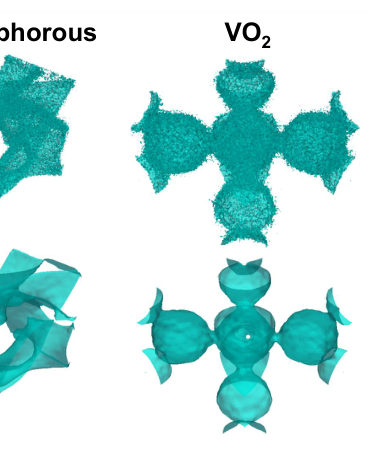
<figcaption class="paper-figure-caption"><b>Fig 1.</b> FIG. 1: Denoised isosurfaces of low-sample DMC electron densities for diamond, blue phosphorus, and VO2. The top row displays the raw, highly noisy DMC densities, while the bottom row shows the smooth, physically coherent isosurfaces recovered using the 3D UNET.</figcaption>
</figure>
<figure class="paper-figure-card">
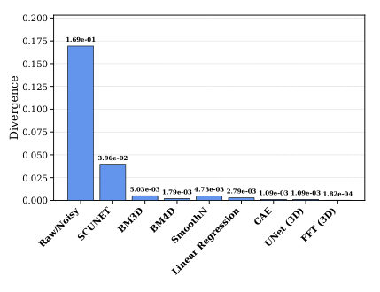
<figcaption class="paper-figure-caption"><b>Fig 2.</b> FIG. 3: Direct JSD comparison for different image-based and volumetric denoising models evaluated against the diamond VMC reference density.</figcaption>
</figure>
<figure class="paper-figure-card">
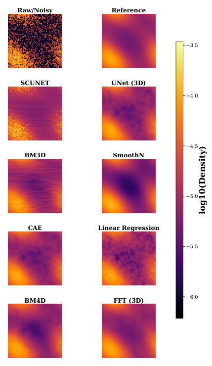
<figcaption class="paper-figure-caption"><b>Fig 3.</b> FIG. 2: Visual comparison of a cross-sectional plane (z = 32) of the diamond electron density profile denoised using various 1D, 2D image-based, and 3D volumetric methods. The comparison highlights structural anomalies, such as horizontal striping and low-density blurring, present in slice-by-slice 2D models compared to volumetric models.</figcaption>
</figure>
<figure class="paper-figure-card">
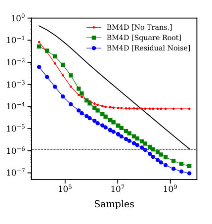
<figcaption class="paper-figure-caption"><b>Fig 4.</b> FIG. 4: Divergence of the denoised densities generated using BM4D with different density transformations relative to the reference. The denoising quality improves as one progresses from no transform (“value”) to square root and residual signal regularized noise. (Left) Bare divergences against the reference. At high sampling, the apparent effectiveness of the denoising wanes (sqrt and residual noise transforms). The horizontal dashed line demarcates the theoretical divergence floor when the high sampling reference is compared against the true noise-free density. (Right) Similar to the left panel, but now with the asymptotic correction applied to approximate the divergence of a denoised...</figcaption>
</figure>
<figure class="paper-figure-card">
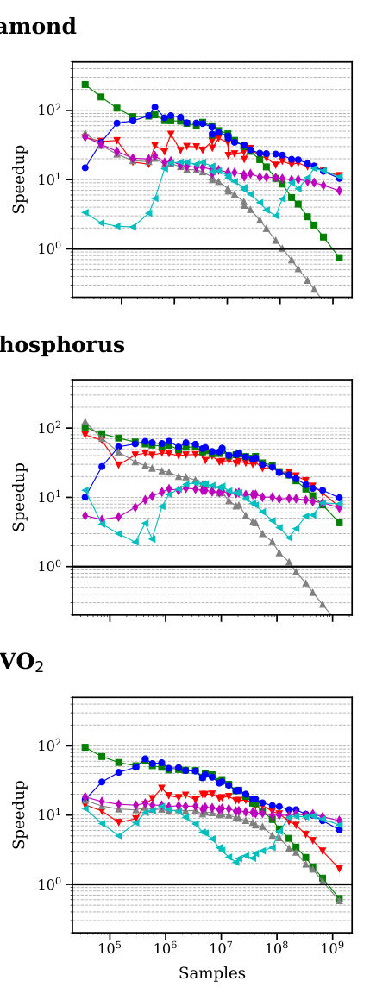
<figcaption class="paper-figure-caption"><b>Fig 5.</b> FIG. 5: Divergences (left) and speedup (right) of denoised densities produced using hyper-tuned denoisers of each class on diamond (top), blue phosphorus (middle), and r-VO2 (bottom). The horizontal dashed line is the divergence between the DFT density and the high-sampled reference, marking a threshold for densities achieving a “useful” noise reduction. Several denoisers display non-uniform noise reduction/increase across materials and input noise levels (sample counts). Multiple denoisers show distinctly different speedup behavior in the low and high sampling limits, with SmoothN and BM4D showing the greatest consistency.</figcaption>
</figure>
</div>

<p><strong>Summary.</strong> This work addresses the critical issue of statistical noise in benchmark-quality electron densities generated by Diffusion Monte Carlo (DMC). By applying physically informed variance stabilization and comparing advanced 3D deep learning models against classical methods, the authors demonstrate that denoising can drastically reduce computational costs while preserving fine physical details. This provides a powerful new tool for making high-accuracy quantum simulations practical for routine applications.</p>
<p><strong>Why it may be interesting.</strong> While focused on quantum chemistry, the core methodology—developing robust ML/numerical pipelines to extract high-fidelity physical observables from inherently noisy, high-dimensional simulation data—is highly relevant for any field involving complex, stochastic simulations like AMO or open quantum systems modeling.</p>
<details>
<summary>Detailed structure</summary>
<p><strong>Main problem.</strong> The primary challenge is mitigating substantial statistical noise present in real-space electron densities obtained from high-accuracy Diffusion Monte Carlo (DMC) simulations.</p>
<p><strong>Main result.</strong> Specialized denoising techniques, particularly those employing variance stabilization and 3D UNETs, can reduce the required computational cost of DMC simulations by a factor of 10 to 100 times while maintaining physical accuracy.</p>
<p><strong>Method.</strong> The authors compare various machine learning and mathematical denoising approaches (Fourier transforms, regression, 3D UNETs) applied after transforming the noisy data using physically informed variance stabilization techniques derived from DFT priors.</p>
<p><strong>Model / system.</strong> The study focuses on electron densities $\rho(\mathbf{r})$ for condensed matter systems like carbon diamond, blue phosphorus, and rutile VO2. These are volumetric histograms representing the joint coordinate distribution $P(\mathbf{R})$.</p>
<p><strong>Key observables.</strong> Electron densities ($\rho$), Jensen-Shannon Divergence (JSD) used as a fidelity metric, and computational speedup factors.</p>
<p><strong>Important parameters / regimes.</strong> Noise levels (high vs. low), sampling counts ($N_{mc}$), and the choice of variance stabilization transformation (e.g., square root or residual).</p>
<p><strong>Assumptions / limitations.</strong> The analysis relies on approximating the noise structure using transformations that map the problem to a more stable, homoscedastic noise regime; it assumes DFT provides a sufficiently accurate physical prior.</p>
<p><strong>Figures summary.</strong> Figures illustrate raw noisy DMC isosurfaces versus smooth, physically coherent denoised isosurfaces for various materials. Other figures compare divergence metrics and computational speedups across different methods and sample sizes.</p>
<p><strong>Paper structure.</strong> The paper systematically introduces the problem of noisy QMC densities, details the mathematical necessity of variance stabilization (using DFT as a guide), compares multiple denoising algorithms (FFT, regression, UNETs) based on information-theoretic divergence metrics, and quantifies the resulting computational speedups.</p>
</details>
<details>
<summary>Abstract</summary>
<p>Obtaining accurate electron densities is important for the fundamental description of molecular and condensed matter systems, as well as for the development of next-generation density functionals. Diffusion Monte Carlo (DMC), in particular, is known to produce benchmark-quality data; however, the predicted real-space electron densities contain substantial amounts of statistical noise. In this work, we study denoising approaches for DMC densities, judged on the basis of the information-theoretic Jensen-Shannon divergence. The denoising is facilitated by an approximate heteroscedastic to homoscedastic transformation leveraging the density functional theory density as a physical prior. We systematically compare a range of denoising techniques-including Fourier transform, regression, and 3D UNETs-on materials showing a wide range of density variations: carbon diamond, blue phosphorus, and rutile VO2. Our results indicate that simple flattened machine learning models and 2D image-based models introduce line artifacts and struggle to capture the full spatial correlation. In contrast, when using variance stabilization, regression methods outperform all others in both the high and low- noise limits across all materials considered. The best denoisers reduce the required cost of density-generating DMC simulations by 10-100x, providing a promising route forward for application in noise-sensitive tasks such as DFT functional inversion.</p>
</details>
<p><sub><a href="#top">↑ back to top</a></sub></p>

<p><a id="paper-2608.09670"></a></p>
<h3 id="microscopic-qed-origin-of-spin-entanglement"><a href="http://arxiv.org/abs/2608.09670v1">Microscopic QED origin of spin entanglement</a></h3>
<p><strong>Authors:</strong> Moslem Zarei<br>
<strong>Type:</strong> theory · <strong>Category:</strong> quantum information and computing · <strong>PDF:</strong> <a href="https://arxiv.org/pdf/2608.09670v1">https://arxiv.org/pdf/2608.09670v1</a><br>
<strong>Analysis basis:</strong> full PDF text, analyzed in chunks
<strong>Topic relevance:</strong> <code>analog quantum simulation</code> <strong>3/5</strong> · <code>Keldysh / 2PI / non-Gaussian methods</code> <strong>2/5</strong> · <code>methods for driven-dissipative</code> <strong>2/5</strong> · <code>correlated / nonlocal dissipation</code> <strong>1/5</strong> · <code>quantum measurements</code> <strong>1/5</strong></p>
<div class="figure-strip-hint">↔ Scroll figures horizontally</div>
<div class="paper-figures-scroll">
<figure class="paper-figure-card">
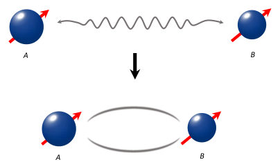
<figcaption class="paper-figure-caption"><b>Fig 1.</b> FIG. 1. The illustration of photon mediated spin-spin interaction between two localized fermionic qubits. Spin A and spin B are separated by a distance R . The wavy line represents the exchange of a virtual photon that mediates an effective interaction between the spins.</figcaption>
</figure>
<figure class="paper-figure-card">
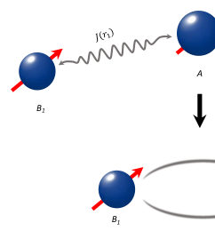
<figcaption class="paper-figure-caption"><b>Fig 2.</b> FIG. 3. The illustration of photon mediated spin-spin interaction between three localized fermionic qubits.</figcaption>
</figure>
</div>

<p><strong>Summary.</strong> This paper derives the effective spin Hamiltonian governing entanglement generation between localized fermionic qubits by integrating out virtual photon fields from QED. The resulting interactions are dipolar and anisotropic, allowing for the calculation of entanglement measures like negativity over time. It provides a rigorous theoretical framework connecting fundamental field theory to quantum information dynamics.</p>
<p><strong>Why it may be interesting.</strong> This work provides a fundamental microscopic derivation for engineered quantum interactions (like dipole-dipole couplings) that are essential building blocks for quantum computation protocols, linking high-energy physics (QED) directly to quantum information dynamics.</p>
<details>
<summary>Detailed structure</summary>
<p><strong>Main problem.</strong> The study aims to derive effective spin Hamiltonians governing entanglement generation from fundamental microscopic Quantum Electrodynamics (QED) scattering processes.</p>
<p><strong>Main result.</strong> The derived effective interaction is dipolar, leading to an XXZ-type Hamiltonian for two qubits and complex multi-body interactions for three or more spins. The system can generate bipartite and multipartite entanglement, reaching maximum negativity values.</p>
<p><strong>Method.</strong> The methodology involves integrating out photon/mediator fields from the full QED Lagrangian to obtain a low-energy effective spin interaction Hamiltonian ($\hat{H}_{	ext{eff}}$). Time evolution is then analyzed using the von Neumann or Quantum Boltzmann Equation formalism.</p>
<p><strong>Model / system.</strong> The model consists of localized fermionic spins (qubits) interacting via virtual photon exchange. The analysis progresses from two qubits to three-body systems, yielding effective spin-spin coupling terms that decay with distance ($R^{-3}$ or $R^{-4}$).</p>
<p><strong>Key observables.</strong> Entanglement negativity ($N(t)$), which quantifies bipartite correlations; the time evolution of the density matrix $
ho(t)$.</p>
<p><strong>Important parameters / regimes.</strong> Coupling strength ($\Gamma_{	ext{SS}}(R)$), spatial separation ($R$), and system size ($N$). The nonrelativistic limit is crucial.</p>
<p><strong>Assumptions / limitations.</strong> The analysis relies heavily on the Born-Markov approximation, treating the mediator fields as unentangled, and taking the nonrelativistic limit for propagators.</p>
<p><strong>Figures summary.</strong> Figures illustrate the photon-mediated spin-spin interaction between two qubits and the Feynman diagram structure for three-body QED interactions involving multiple mediators.</p>
<p><strong>Paper structure.</strong> The paper systematically derives effective Hamiltonians by integrating out field degrees of freedom, first addressing the two-qubit case to find dipolar coupling, then extending the formalism to three or more spins using multi-photon exchange diagrams and master equations.</p>
</details>
<details>
<summary>Abstract</summary>
<p>We study effective spin interactions arising from quantum electrodynamics (QED) scattering between localized fermionic spins. By integrating out photon and mediator fields, the dynamics reduce to an effective spin Hamiltonian.   For two qubits in the nonrelativistic regime, the resulting interaction takes a tensor dipolar form with an asymptotic decay proportional to \(R^{-3}\). We obtain analytical expressions for the entanglement negativity, highlighting its dependence on coupling strength and spatial configuration.   We then examine a setup in which two bath spins interact via a sequential exchange with an intermediate fermionic mediator. At the perturbative order considered, the mediator remains unentangled and induces an effective bath--bath interaction with stronger spatial suppression than in the photon-mediated case.   Extending the construction to an \(N\)-spin setting yields an effective interaction network mediated by virtual exchange processes, which can support the generation of multipartite entanglement across the system.</p>
</details>
<p><sub><a href="#top">↑ back to top</a></sub></p>

<p><a id="paper-2608.09116"></a></p>
<h3 id="phonon-assisted-transport-and-hole-phonon-coupling-in-gaas-double-quantum-dots"><a href="http://arxiv.org/abs/2608.09116v1">Phonon-assisted transport and hole-phonon coupling in GaAs double quantum dots</a></h3>
<p><strong>Authors:</strong> Jin Leng, Wei-Zhu Liao, Hao-Tian Jiang, Di Liu, Bao-Chuan Wang, Gang Cao, Hai-Ou Li, Guo-Ping Guo<br>
<strong>Type:</strong> both · <strong>Category:</strong> other · <strong>PDF:</strong> <a href="https://arxiv.org/pdf/2608.09116v1">https://arxiv.org/pdf/2608.09116v1</a><br>
<strong>Analysis basis:</strong> full PDF text, analyzed in chunks
<strong>Topic relevance:</strong> <code>methods for driven-dissipative</code> <strong>3/5</strong> · <code>driven-dissipative phase transition</code> <strong>2/5</strong> · <code>Keldysh / 2PI / non-Gaussian methods</code> <strong>1/5</strong> · <code>correlated / nonlocal dissipation</code> <strong>1/5</strong> · <code>quantum measurements</code> <strong>1/5</strong></p>
<div class="figure-strip-hint">↔ Scroll figures horizontally</div>
<div class="paper-figures-scroll">
<figure class="paper-figure-card">
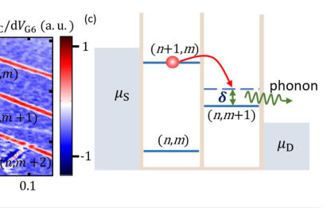
<figcaption class="paper-figure-caption"><b>Fig 1.</b> Fig. 1. (a) Scanning electron microscope image of the confining gates fabricated on</figcaption>
</figure>
<figure class="paper-figure-card">
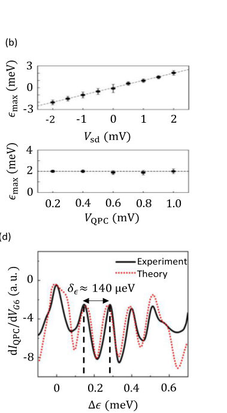
<figcaption class="paper-figure-caption"><b>Fig 2.</b> Fig. 2. (a) The investigated regions near the (𝑛+ 1, 𝑚)–(𝑛, 𝑚+ 1) charge state under</figcaption>
</figure>
<figure class="paper-figure-card">
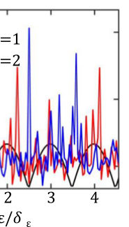
<figcaption class="paper-figure-caption"><b>Fig 3.</b> Fig. 3. By taking eigenfunctions of a simple harmonic-oscillator potential with different</figcaption>
</figure>
</div>

<p><strong>Summary.</strong> This paper investigates hole-phonon coupling in GaAs double quantum dots by observing characteristic oscillatory patterns in the charge stability diagram. The authors theoretically model these oscillations as arising from phonon emission during inelastic interdot tunneling, confirming that the effect is highly dependent on the symmetry of the confined wave functions.</p>
<p><strong>Why it may be interesting.</strong> This work provides concrete evidence of coherent electron-phonon coupling effects in nanoscale devices, which is crucial for understanding decoherence mechanisms and designing energy-selective quantum transport elements.</p>
<details>
<summary>Detailed structure</summary>
<p><strong>Main problem.</strong> The study investigates the role of hole-phonon interactions and phonon-assisted transport mechanisms within semiconductor double quantum dots (DQD). The goal is to understand how these coupling effects manifest in charge transport measurements.</p>
<p><strong>Main result.</strong> Pronounced oscillatory stripe patterns observed in the charge stability diagram are directly attributed to inelastic interdot tunneling accompanied by spontaneous phonon emission. These oscillations require specific symmetry conditions on the hole wave functions to be visible.</p>
<p><strong>Method.</strong> The research combines experimental measurement of the charge stability diagram with theoretical modeling using a master equation approach that incorporates piezoelectric hole-phonon coupling.</p>
<p><strong>Model / system.</strong> The physical system is a gate-defined GaAs DQD coupled to a QPC sensor, operating on a 2D hole gas. The theory models dynamics via a master equation incorporating elastic tunneling and phonon-hole interaction terms derived from the Hamiltonian.</p>
<p><strong>Key observables.</strong> Oscillatory stripe patterns in the charge stability diagram; the oscillation periodicity ($\delta\epsilon = 140 \mu	ext{eV}$); and the dependence of pattern visibility on source-drain bias ($V_{sd}$).</p>
<p><strong>Important parameters / regimes.</strong> Low temperature ($\approx 20$ mK); finite source-drain bias ($V_{sd}$); piezoelectric coupling strength; interdot distance ($d$).</p>
<p><strong>Assumptions / limitations.</strong> The process is modeled as inelastic tunneling with spontaneous phonon emission, and the theoretical analysis assumes single-particle Gaussian wave functions.</p>
<p><strong>Figures summary.</strong> Figures show SEM images of the DQD/QPC structure, detailed views of the oscillatory stripe patterns in the charge stability diagram, and plots illustrating how the maximum voltage range ($\epsilon_{	ext{max}}$) depends on $V_{sd}$ but not $V_{QPC}$.</p>
<p><strong>Paper structure.</strong> The paper presents experimental observations of oscillations in the charging diagram, followed by a theoretical derivation using a master equation to model phonon emission rates and reproduce the observed oscillatory periodicity.</p>
</details>
<details>
<summary>Abstract</summary>
<p>Hole-phonon interactions play an important role in transport and decoherence processes in semiconductor quantum dots. Here we investigate hole-phonon coupling in a gate-defined GaAs double quantum dot integrated with a quantum point contact charge sensor. Under finite source-drain bias, pronounced oscillatory stripe patterns appear near specific charge transition regions in the charge stability diagram. We attribute these oscillations to phonon emission during inelastic interdot tunneling. A theoretical model including piezoelectric hole-phonon coupling reproduces the observed patterns. Furthermore, our analysis shows that the oscillations emerge only in particular charge configurations. Our results provide direct insight into phonon-assisted transport and coherent hole-phonon interactions in semiconductor quantum dots.</p>
</details>
<p><sub><a href="#top">↑ back to top</a></sub></p>

<p><a id="paper-2608.09714"></a></p>
<h3 id="sampling-free-energy-landscapes-of-ionic-colloidal-crystal-systems-using-machine-learned-proxy-collective-variables"><a href="http://arxiv.org/abs/2608.09714v1">Sampling Free Energy Landscapes of Ionic Colloidal Crystal Systems using Machine-Learned Proxy Collective Variables</a></h3>
<p><strong>Authors:</strong> Michael S. Chen, Stefano Sacanna, Glen M. Hocky<br>
<strong>Type:</strong> theory · <strong>Category:</strong> statistical mechanics · <strong>PDF:</strong> <a href="https://arxiv.org/pdf/2608.09714v1">https://arxiv.org/pdf/2608.09714v1</a><br>
<strong>Analysis basis:</strong> full PDF text, analyzed in chunks
<strong>Topic relevance:</strong> <code>methods for driven-dissipative</code> <strong>3/5</strong> · <code>quantum measurements</code> <strong>2/5</strong> · <code>Keldysh / 2PI / non-Gaussian methods</code> <strong>1/5</strong> · <code>analog quantum simulation</code> <strong>1/5</strong> · <code>driven-dissipative phase transition</code> <strong>1/5</strong></p>
<div class="figure-strip-hint">↔ Scroll figures horizontally</div>
<div class="paper-figures-scroll">
<figure class="paper-figure-card">
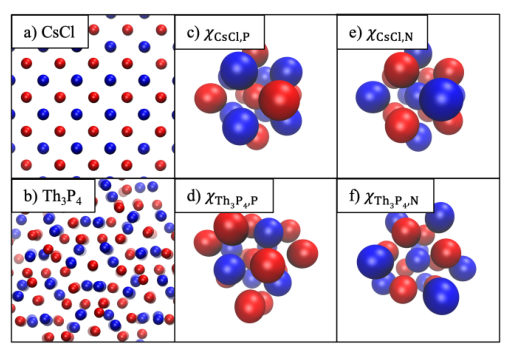
<figcaption class="paper-figure-caption"><b>Fig 1.</b> FIG. 1. Energy-minimized structures for CsCl-like (a) and Th3P4-like (b) colloidal crystals viewed from an orthographic perspective and with the particle diameters set to 50% of their actual values. The system consists of both positive (red) and negative (blue) colloidal particles with diameters of 170 and 210 nm, respectively. Reference local environments χCsCl,P and χTh3P4,P around the positive particles are depicted in (c) and (d) while the reference local environments χCsCl,N and χTh3P4,N around the negative particles are depicted in (e) and (f).</figcaption>
</figure>
<figure class="paper-figure-card">
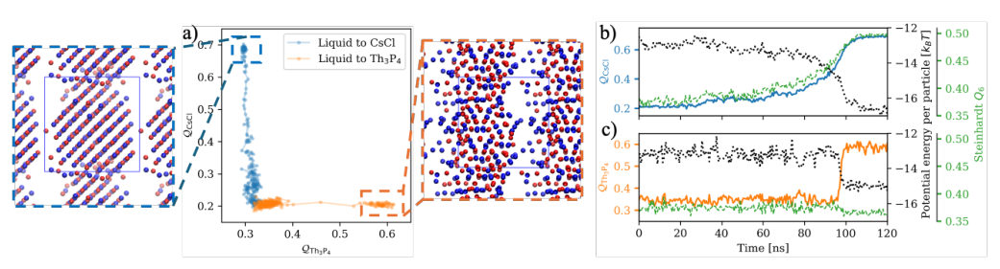
<figcaption class="paper-figure-caption"><b>Fig 2.</b> FIG. 2. a) Our CVs, QCsCl and QTh3P4, over the course of an unbiased MD simulation starting from a disordered liquid that crystallized into CsCl (blue) where surface potentials of the negative and positive particles were -40 and +53 mV, respectively, and another simulation that resulted in a Th3P4 crystal when using surface potentials of -53 and +40 mV. The CVs resolve the crystalline phases from each other and from the disordered phases. b+c) Time traces of the system’s QCsCl and QTh3P4 (blue and orange) track with the potential energy (black) during unbiased MD simulations along with the Steinhardt-Nelson Q6 OP for comparison (green).</figcaption>
</figure>
<figure class="paper-figure-card">
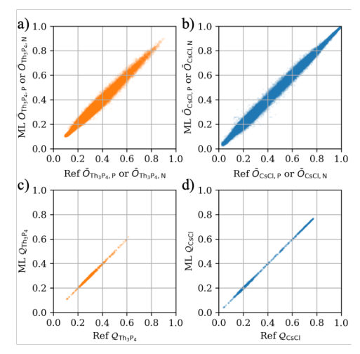
<figcaption class="paper-figure-caption"><b>Fig 3.</b> FIG. 3. The accuracy of predictions obtained from our ML models trained on reference particle-specific order parameters (OPs) gauging how similar their local environment is com- pared to that of Th3P4-like (a) and CsCl-like (b) crystals. Our CVs (c+d) are the configuration average of our OPs and the values obtained from our ML models are well correlated with the reference values. The correlation plots show the ML predicted values as compared to the reference values as eval- uated on our 1135 configuration validation set.</figcaption>
</figure>
<figure class="paper-figure-card">
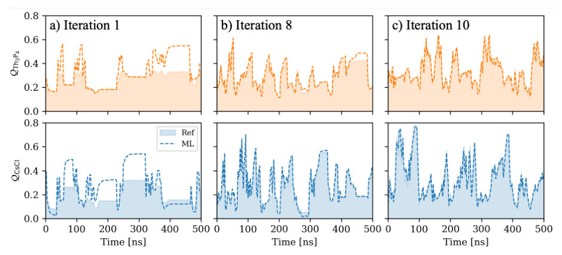
<figcaption class="paper-figure-caption"><b>Fig 4.</b> FIG. 4. Time traces of QCsCl and QTh3P4 over the course of a metadynamics simulation performed at iterations 1, 8, and 10 of our active learning protocol for constructing the dataset where the ML predicted CVs used to drive the metadynamics simulation are shown as dashed lines and the reference values for the CVs are represented by the shaded area. (a) Our ML model of both QCsCl and QTh3P4 trained to the initial dataset displays large errors. By iteration 8 our ML model for QCsCl is accurate but our model for QTh3P4 still displays errors at higher values, however both models accurately predict the CVs by iteration 10.</figcaption>
</figure>
<figure class="paper-figure-card">
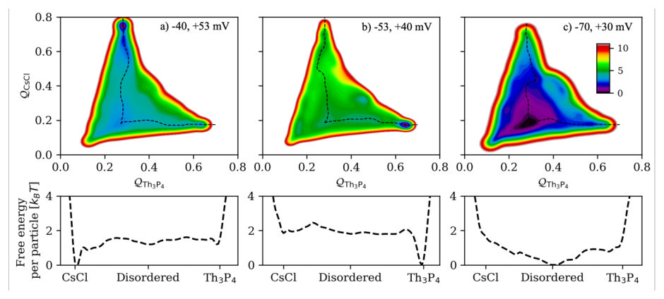
<figcaption class="paper-figure-caption"><b>Fig 5.</b> FIG. 5. 2D free energy surfaces obtained from our metadynamics simulations employing our ML models of QCsCl and QTh3P4 when varying the surface potentials of the negative and positive particles showing how CsCl and Th3P4 crystals can be thermodynamically favored under different conditions. Dashed lines show minimum free energy paths along the surface, with 1D free energies shown in the lower panels. In all 3 cases the negative particle has a diameter of 210 nm and the positive particle has a diameter of 170 nm. (a) When the surface potentials for negative and positive particles are -40 and +53 mV (-40,+53 mV), respectively, then CsCl-like crystals are favored. (b) When we flip things to...</figcaption>
</figure>
</div>

<p><strong>Summary.</strong> This work addresses the challenge of mapping the free energy landscape in ionic colloidal crystals by using machine learning. The authors developed SE(3)-equivariant transformer networks to create computationally cheap proxies for complex structural descriptors. This allows them to precisely predict how tuning external parameters, like surface potentials, can steer the system toward a desired metastable crystal structure.</p>
<p><strong>Why it may be interesting.</strong> While focused on classical soft matter, the methodology—using equivariant ML models to parameterize complex, high-dimensional order parameters for enhanced sampling—is highly relevant to developing efficient simulation tools for quantum many-body systems where calculating accurate local correlation functions is challenging.</p>
<details>
<summary>Detailed structure</summary>
<p><strong>Main problem.</strong> The primary goal is to accurately quantify the free energy landscape of self-assembled ionic colloidal crystal systems to enable rational control over the resulting crystalline structure.</p>
<p><strong>Main result.</strong> The authors successfully used machine-learned proxy collective variables to compute relative free energies, demonstrating that tuning surface potentials can thermodynamically favor one metastable crystal structure (e.g., CsCl vs. Th3P4) over another.</p>
<p><strong>Method.</strong> They employed Metadynamics simulations driven by SE(3)-equivariant transformer networks trained as machine-learned proxies for complex local environment order parameters.</p>
<p><strong>Model / system.</strong> The system consists of ionic colloids (positive and negative charges) forming crystal structures. The interactions are governed by electrostatic potentials derived from DLVO theory and polymer brush repulsion models.</p>
<p><strong>Key observables.</strong> Relative free energies ($\Delta G$) between different crystalline phases, quantified using global collective variables like $ ext{Q}<em ext_Th3P4="ext{Th3P4">{    ext{CsCl}}$ and $   ext{Q}</em>$.}</p>
<p><strong>Important parameters / regimes.</strong> Surface potentials (e.g., $(-40:+53)$ mV vs. $(-53:+40)$ mV), temperature ($T=300$ K), and particle sizes.</p>
<p><strong>Assumptions / limitations.</strong> Standard crystalline order parameters fail for exotic structures, necessitating the use of computationally expensive local environment descriptors which are then approximated by the ML proxy model.</p>
<p><strong>Figures summary.</strong> Figures illustrate the successful differentiation between crystal phases using CVs, showing how varying surface potentials shifts the minimum free energy path on the 2D free energy surfaces (FIG. 5).</p>
<p><strong>Paper structure.</strong> The paper establishes the need for accurate free energy sampling in colloidal systems; it introduces local environment descriptors as superior but costly alternatives to standard order parameters; the core contribution is developing and training an SE(3)-equivariant transformer network to serve as an efficient, differentiable proxy for these CVs; finally, they apply this method to map out structure-dependent free energy landscapes.</p>
</details>
<details>
<summary>Abstract</summary>
<p>Charged colloids coated with a polymer brush can be designed to preferentially self-assemble into different crystal structures by varying easy-to-tune experimental conditions. For a given set of conditions, we have observed in experiments and simulations a distribution of thermodynamically (meta)stable self-assembled crystal structures. Properly quantifying the free energy landscape of these colloidal systems is essential for rationally choosing conditions to preferentially target particular crystal structures. For some of the structures we have formed, standard crystalline order parameters are not able to differentiate between crystals or between crystals and amorphous aggregates. We show that local environment similarity descriptors are able to distinguish the relevant metastable states, but are too expensive for use in biased MD simulations. Here, we adopt an approach from machine-learned interaction potentials showing that SE(3)-equivariant transformer networks can serve as an efficient-to-evaluate machine-learned proxy. As a result, we can compute the relative free energies of accessible colloidal structures as a function of different experimentally-relevant physical knobs that can steer our system between two observed crystal types. As an example application, we then show how changing surface potentials of positive and negative colloids while maintaining the same attractive energy can shift which crystal structure is favored.</p>
</details>
<p><sub><a href="#top">↑ back to top</a></sub></p>

<p><a id="paper-2608.09601"></a></p>
<h3 id="time-dilation-and-center-of-mass-normalization-in-the-page-wootters-formalism"><a href="http://arxiv.org/abs/2608.09601v1">Time Dilation and center of Mass Normalization in the Page-Wootters Formalism</a></h3>
<p><strong>Authors:</strong> Juan Sebastian Ardenghi<br>
<strong>Type:</strong> theory · <strong>Category:</strong> other · <strong>PDF:</strong> <a href="https://arxiv.org/pdf/2608.09601v1">https://arxiv.org/pdf/2608.09601v1</a><br>
<strong>Analysis basis:</strong> full PDF text, analyzed in chunks
<strong>Topic relevance:</strong> <code>quantum measurements</code> <strong>3/5</strong> · <code>interference shaping light</code> <strong>2/5</strong> · <code>Keldysh / 2PI / non-Gaussian methods</code> <strong>1/5</strong> · <code>analog quantum simulation</code> <strong>1/5</strong> · <code>correlated / nonlocal dissipation</code> <strong>1/5</strong></p>
<div class="figure-strip-hint">↔ Scroll figures horizontally</div>
<div class="paper-figures-scroll">
<figure class="paper-figure-card">
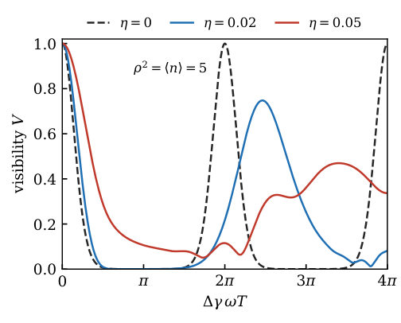
<figcaption class="paper-figure-caption"><b>Fig 1.</b> FIG. 1. Interferometric visibility V of a coherent-state oscil- lator clock (mean excitation ρ2 = ⟨n⟩= 5) versus the dimen- sionless time ∆γ ωT. The dashed curve (η = 0) is the stan- dard time-dilation result, which is periodic and fully revives at ∆γ ωT = 2π. The solid curves include the normalization factor Ω(Hr), whose quadratic-in-energy term (Eq. (43)) sup- presses and shifts the revivals. For clarity, η = ℏω/Mc2 is set to illustrative values far larger than any atomic-clock value (η ∼10−8), for which the two curves would be indistinguish- able on this scale; the enhanced regime corresponds to the large coherent-internal-energy scenario discussed in the text.</figcaption>
</figure>
</div>

<p><strong>Summary.</strong> This paper analyzes relativistic effects on composite quantum clocks using the Page-Wootters formalism, treating time as a quantum variable. It demonstrates that internal energy back-reaction modifies the center-of-mass evolution into a non-local equation. The key finding is a measurable correction to interferometric visibility that depends quadratically on the absolute internal energy distribution.</p>
<p><strong>Why it may be interesting.</strong> This work provides a rigorous theoretical framework connecting fundamental quantum gravity concepts (relativity/time dilation) with observable phenomena in high-precision AMO experiments like atomic clocks. The prediction of non-local dynamics and specific energy-dependent corrections is highly relevant to modern quantum metrology.</p>
<details>
<summary>Detailed structure</summary>
<p><strong>Main problem.</strong> The work investigates how relativistic effects, specifically time dilation, manifest when treating a composite quantum clock using the Page-Wootters relational formalism.</p>
<p><strong>Main result.</strong> It shows that the back-reaction of internal energy on the center-of-mass motion leads to non-local dynamics in the conditioned Schrödinger equation. This results in an interferometric visibility correction quadratic in the internal energy, dependent on the absolute energy distribution rather than just energy gaps.</p>
<p><strong>Method.</strong> The authors apply the Page-Wootters mechanism to a composite system Hamiltonian, deriving conditioned evolution equations and analyzing the resulting non-local dynamics via operator-valued normalization factors.</p>
<p><strong>Model / system.</strong> The model is a composite quantum clock with distinct internal (clock) and center-of-mass degrees of freedom. The analysis uses Hamiltonians structured for separation into these two parts, applicable to systems like atoms or coupled oscillators.</p>
<p><strong>Key observables.</strong> Interferometric visibility; the non-local nature of the conditioned center-of-mass dynamics; the quadratic correction term in visibility dependent on internal energy distribution.</p>
<p><strong>Important parameters / regimes.</strong> Compton time ($\hbar/Mc^2$); mean internal energies ($E_{int}$); transition frequencies ($\Delta\epsilon$).</p>
<p><strong>Assumptions / limitations.</strong> The analysis relies on approximations, including treating the total Hamiltonian by separating center-of-mass and internal parts, and using low-energy expansions for relativistic factors.</p>
<p><strong>Figures summary.</strong> Figure 1 illustrates interferometric visibility decay for a coherent oscillator clock, comparing standard time dilation results (dashed line) against those incorporating the $\Omega(H_r)$ correction (solid lines).</p>
<p><strong>Paper structure.</strong> The paper develops the formalism by first establishing the general Hamiltonian structure in the Page-Wootters framework. It then derives the non-local evolution equation for the center-of-mass sector due to internal energy back-reaction, culminating in predictions for measurable corrections in interferometry.</p>
</details>
<details>
<summary>Abstract</summary>
<p>In this work, we study the emergence of relativistic effects in a composite quantum clock within the Page-Wootters relational formulation of quantum mechanics. We consider a system with internal and center-of-mass degrees of freedom and analyze the conditioned evolution of the center-of-mass relative to the internal system treated as an internal clock. We show that the internal sector exhibits an effective time dilation. Retaining the full mass-energy structure of the composite particle, a back-reaction of the internal energy on the center-of-mass sector appears through an operator-valued normalization factor. As a direct consequence of the back-reaction, the conditioned center-of-mass dynamics is governed by a Schroodinger equation that is non-local in the clock time, with an effective temporal non-locality of the order of the Compton time of the composite system. Applying the formalism to a center-of-mass momentum superposition, we find that the interferometric visibility acquires a correction that is quadratic in the internal energy, and therefore depends on the absolute distribution of clock energies rather than only on the energy gaps that control the standard time-dilation dephasing. Although this correction is parametrically small, it is a generic feature of relativistic composite clocks and can, in principle, be isolated through a differential visibility measurement comparing clocks with equal transition frequency but different mean internal energies.</p>
</details>
<p><sub><a href="#top">↑ back to top</a></sub></p>

<p><a id="paper-2608.09808"></a></p>
<h3 id="autonomous-lindblad-realizability-of-nonunitary-linear-dynamics-with-a-carleman-lattice-boltzmann-application"><a href="http://arxiv.org/abs/2608.09808v1">Autonomous Lindblad Realizability of Nonunitary Linear Dynamics with a Carleman Lattice Boltzmann Application</a></h3>
<p><strong>Authors:</strong> Muhammad Idrees Khan<br>
<strong>Type:</strong> theory · <strong>Category:</strong> other · <strong>PDF:</strong> <a href="https://arxiv.org/pdf/2608.09808v1">https://arxiv.org/pdf/2608.09808v1</a><br>
<strong>Analysis basis:</strong> full PDF text, analyzed in chunks
<strong>Topic relevance:</strong> <code>methods for driven-dissipative</code> <strong>3/5</strong> · <code>driven-dissipative phase transition</code> <strong>2/5</strong> · <code>correlated / nonlocal dissipation</code> <strong>1/5</strong> · <code>quantum measurements</code> <strong>1/5</strong></p>
<div class="figure-strip-hint">↔ Scroll figures horizontally</div>
<div class="paper-figures-scroll">
<figure class="paper-figure-card">
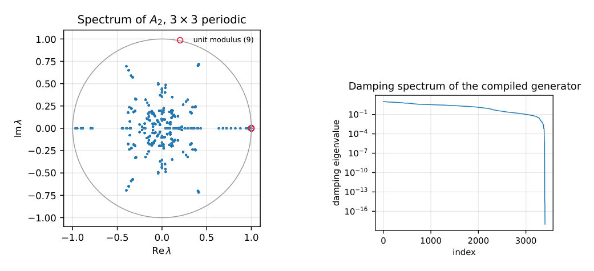
<figcaption class="paper-figure-caption"><b>Fig 1.</b> FIG. 1. Left: spectrum of the global endpoint A2 on the 3 × 3 periodic lattice against the unit circle. The 9 unit-modulus eigenvalues are neutral Carleman modes, including conserved modes and degree-two product modes, and are all semisimple, which is what makes the endpoint power bounded. The right panel shows the eigenvalues of the damping matrix Γ of the compiled generator, which are nonnegative up to floating-point roundoff. The neutral directions correspond to the unit-modulus eigenvalues shown in the left panel.</figcaption>
</figure>
<figure class="paper-figure-card">

<figcaption class="paper-figure-caption"><b>Fig 2.</b> FIG. 2. Truncation error against the nonlinear reference after 10 timesteps, with a cubic reference line. The measured slope follows the cubic prediction, consistent with the leading truncation error arising from omitted degree-three terms rather than from the GKSL realization.</figcaption>
</figure>
</div>

<p><strong>Summary.</strong> The paper develops a general criterion proving that any finite linear dynamic endpoint can be realized as an autonomous Lindblad evolution if the endpoint is invertible and power bounded. This theory is rigorously applied to the Lattice Boltzmann Method, successfully mapping its complex, dissipative timestep into a time-independent quantum master equation form.</p>
<p><strong>Why it may be interesting.</strong> This work provides a powerful bridge between classical computational physics (like Lattice Boltzmann) and rigorous open quantum system descriptions, offering a concrete method to treat dissipative nonunitary dynamics quantum mechanically without resorting to measurement postulates.</p>
<details>
<summary>Detailed structure</summary>
<p><strong>Main problem.</strong> The central problem is establishing a general, necessary, and sufficient criterion for realizing finite linear dynamics (endpoints) derived from classical systems as an autonomous Gorini–Kossakowski–Sudarshan–Lindblad (GKSL) evolution in open quantum systems.</p>
<p><strong>Main result.</strong> A finite real linear endpoint matrix A admits such an autonomous GKSL realization if and only if A is invertible and power bounded. This criterion was successfully applied to the D2Q9 Lattice Boltzmann Method timestep.</p>
<p><strong>Method.</strong> The authors combine Carleman linearization (to map nonlinear dynamics to a linear endpoint) with open quantum system theory, constructing the required Hamiltonian and Lindblad operators based on the properties of this endpoint matrix.</p>
<p><strong>Model / system.</strong> The study models nonunitary linear dynamics derived from classical fluid simulations, specifically applying the framework to the D2Q9 multiple-relaxation-time Lattice Boltzmann (LB) collision and streaming timestep.</p>
<p><strong>Key observables.</strong> Invertibility and power boundedness of the endpoint matrix A; residual errors in physical identities (e.g., Kraus completeness); comparison between decoded quantum state and classical trajectory over time steps.</p>
<p><strong>Important parameters / regimes.</strong> The lattice structure (D2Q9), relaxation times ($   au_
u$), and the order of truncation used in the Carleman lifting ($K$).</p>
<p><strong>Assumptions / limitations.</strong> The construction assumes that the dynamics can be accurately captured by a finite-dimensional linear endpoint derived from polynomial expansion, and it avoids postselection inherent to unitary embeddings.</p>
<p><strong>Figures summary.</strong> Figures illustrate the spectrum of the global endpoint matrix and plot the measured truncation error against time steps, demonstrating expected cubic scaling consistent with the order of approximation.</p>
<p><strong>Paper structure.</strong> The paper first introduces the general mathematical framework (Theorem 4) linking GKSL realizability to endpoint properties. It then applies this theory by analyzing the D2Q9 LBM timestep, showing how collision and streaming are compiled into a single admissible endpoint for autonomous quantum evolution.</p>
</details>
<details>
<summary>Abstract</summary>
<p>Carleman lifting converts nonlinear polynomial dynamics into finite linear systems, but the resulting truncations are generally nonunitary and need not correspond to physical quantum evolution. We prove that a finite linear endpoint admits an autonomous Gorini--Kossakowski--Sudarshan--Lindblad (GKSL) realization on vacuum coherences if and only if it is invertible and power bounded. The construction is explicit and realizes the nonunitary map directly as open-system dynamics, with no endpoint postselection and with one encoding and one decoding over repeated timesteps. We apply the result to the complete D2Q9 multiple-relaxation-time lattice Boltzmann (LB) timestep by compiling collision and periodic streaming into a single Carleman endpoint. The resulting GKSL evolution reproduces the classical Carleman trajectory over multiple timesteps, while the remaining discrepancy from nonlinear LB dynamics is the expected Carleman truncation error. The result establishes a general criterion for autonomous open-quantum realization of finite nonunitary dynamics, with Carleman--LB dynamics as a concrete example.</p>
</details>
<p><sub><a href="#top">↑ back to top</a></sub></p>

<p><a id="paper-2608.09932"></a></p>
<h3 id="cell-natural-orbitals-in-interacting-topological-bands"><a href="http://arxiv.org/abs/2608.09932v1">Cell Natural Orbitals in Interacting Topological Bands</a></h3>
<p><strong>Authors:</strong> Nishchhal Verma, Harshitra Mahalingam, Daniel Muñoz-Segovia, Raquel Queiroz<br>
<strong>Type:</strong> theory · <strong>Category:</strong> strongly correlated electrons · <strong>PDF:</strong> <a href="https://arxiv.org/pdf/2608.09932v1">https://arxiv.org/pdf/2608.09932v1</a><br>
<strong>Analysis basis:</strong> full PDF text, analyzed in chunks
<strong>Topic relevance:</strong> <code>methods for driven-dissipative</code> <strong>3/5</strong> · <code>analog quantum simulation</code> <strong>2/5</strong> · <code>Keldysh / 2PI / non-Gaussian methods</code> <strong>1/5</strong> · <code>quantum measurements</code> <strong>1/5</strong></p>
<div class="figure-strip-hint">↔ Scroll figures horizontally</div>
<div class="paper-figures-scroll">
<figure class="paper-figure-card">

<figcaption class="paper-figure-caption"><b>Fig 1.</b> FIG. 1. Cell Natural Orbitals. a. Band structure of twisted bilayer graphene in the chiral limit with twist angle θ = 1.07◦. There are two flat bands related by chiral symmetry. We select one of them to construct the low-energy projector P. b. CNO spectrum obtained from the unit-cell reduced density matrix defined in Eq. (1). The spectrum decays exponentially, hinting that only a few orbitals are required to efficiently capture the charge density within the unit cell. c. The first three CNOs with dominant occupation in real space. The AA site is at the center of the unit cell while AB and BA sites form the corners. The dominant CNO is centered at the AA site in the moir´e unit cell,...</figcaption>
</figure>
<figure class="paper-figure-card">

<figcaption class="paper-figure-caption"><b>Fig 2.</b> FIG. 2. Unit-cell entanglement across the Haldane model phase transition. (a) CNO eigenvalues λ± vs staggered potential M/t at fixed flux ϕ = π/2. (b) Unit-cell entanglement entropy Scell showing finite entanglement in the topological phase (M &lt; 3 √</figcaption>
</figure>
<figure class="paper-figure-card">

<figcaption class="paper-figure-caption"><b>Fig 3.</b> FIG. 3. Topologically protected zeros in the Haldane model. Magnitude of the leading CNO envelope |s1,k| in (a)-(b) the topological phase and (c) the trivial phase. In the topological phase s1,k vanishes at a point in the Brillouin zone, reflecting the obstruction to a single localized orbital. The location of the zero depends on parameters (see Appendix C), but the existence is a topological property. There are no zeros in the trivial phase.</figcaption>
</figure>
<figure class="paper-figure-card">

<figcaption class="paper-figure-caption"><b>Fig 4.</b> FIG. 4. Complexity measures for the multifold fermion model. Continuum model Hk = kxσx+kyσy+(k2/2M+1)σz in the (2S+1)-dimensional representation of SU(2), analyzing the top band. (a) Occupation spectrum for increasing spin S, showing growth in the number of significant modes. (b) IPR I decreases as more modes contribute; Shannon entropy S increases as spectral weight spreads. The model interpolates from the single-orbital limit (S = 0: I = 1, S = 0) to the ideal-band regime (S →∞: I →0, S →1), with the number of significantly occupied modes growing with S. Momentum cutoff ΛK ≫M held fixed.</figcaption>
</figure>
<figure class="paper-figure-card">

<figcaption class="paper-figure-caption"><b>Fig 5.</b> FIG. 5. Gram matrix in chiral TBG. Determinant of the Gram matrix Sk, Eq. (21), over the moir´e Brillouin zone for truncations Nτ = 1–3 (top panels), for the TBG flat band at the magic angle in the chiral limit. For Nτ = 1 the ma- trix is singular at the topological zero at Γ; the zero is lifted for Nτ ≥2. The bottom panel shows the truncation error E(Nτ ) = P</figcaption>
</figure>
</div>

<p><strong>Summary.</strong> This work introduces Cell Natural Orbitals (CNOs) as a powerful tool to bridge momentum-space band theory and real-space correlation physics in topological materials. By decomposing interaction form factors using CNOs, it establishes a systematic hierarchy for treating interactions, allowing researchers to control computational complexity by separating dominant, dynamically coupled channels from weaker, mean-field treatable ones.</p>
<p><strong>Why it may be interesting.</strong> The concept of using natural orbitals derived from a reduced density matrix to systematically truncate the Hilbert space is highly relevant for modeling strongly correlated systems where exact diagonalization is impossible, providing an orbital basis tailored to the underlying band structure topology.</p>
<details>
<summary>Detailed structure</summary>
<p><strong>Main problem.</strong> The paper addresses the challenge of representing interactions in topological bands when standard methods fail due to the non-local nature imposed by band topology.</p>
<p><strong>Main result.</strong> Cell Natural Orbitals (CNOs) provide a geometry-informed framework that systematically decomposes projected interactions, revealing an intrinsic hierarchy useful for controlled many-body calculations.</p>
<p><strong>Method.</strong> The core method involves singular-value decomposition of band-projected density form factors to define CNOs, which are the eigenstates of the unit-cell reduced one-particle density matrix.</p>
<p><strong>Model / system.</strong> The analysis is applied to interacting topological materials, specifically using magic-angle twisted bilayer graphene in the chiral limit as a concrete example. The formalism is general for systems exhibiting band topology.</p>
<p><strong>Key observables.</strong> CNO occupations (eigenvalues of the reduced density matrix), unit-cell entanglement entropy ($S_{	ext{cell}}$), and the spectral function $A(k, \omega)$.</p>
<p><strong>Important parameters / regimes.</strong> The relative strength hierarchy between dominant and subdominant CNO channels; momentum dependence in the CNO envelope function.</p>
<p><strong>Assumptions / limitations.</strong> The analysis relies on a geometry-based truncation scheme derived from SVD, and subsequent calculations often employ approximations like the Hubbard-I or Rank-1 approximation for self-energy calculations.</p>
<p><strong>Figures summary.</strong> Figures illustrate band structures alongside CNO spectra showing exponential decay, real-space distributions of dominant CNOs (e.g., at AA sites), and evidence of topologically protected zeros in the leading CNO envelope function.</p>
<p><strong>Paper structure.</strong> The paper progresses from establishing the theoretical necessity of CNOs to quantify orbital complexity, demonstrating their utility via entanglement measures ($S_{	ext{cell}}$) in topological phases, and finally applying this framework to calculate self-energies ($\Sigma$) for interacting systems, showing how approximations affect gap closing.</p>
</details>
<details>
<summary>Abstract</summary>
<p>Topological bands exhibit obstruction to exponentially localized and symmetric Wannier functions, challenging the standard paradigm of representing projected interactions in terms of local orbitals with finite range. To faithfully capture the form factors and quantum geometry of topological bands we introduce a singular-value decomposition of the band-projected density form factors, enabling a geometry-based truncation scheme of the Hilbert space, exposing an intrinsic hierarchy on band-projected interactions that is determined by the underlying wavefunctions. This decomposition is most naturally described in terms of Cell Natural Orbitals (CNOs), as the eigenstates of the unit-cell reduced one-particle density matrix, whose occupation provide a measure of the minimal orbital complexity required to faithfully represent the band wavefunctions overlaps. The CNO decomposition identifies systematically the minimal number of local orbitals needed to reproduce short-ranged interactions while resolving the hierarchy of interaction strengths across CNO channels. Applied to magic-angle twisted bilayer graphene in the chiral limit, we find that the dominant CNO is centered at the AA site, resembling the $f$-fermion of the heavy-fermion model. The subdominant CNO channels carry progressively weaker interaction matrix elements, allowing them to be treated at the static mean-field level, while the dominant channel requires a dynamical self-energy. The formalism illustrates how variations of charge density within the unit cell generate momentum dependence in the CNO envelope function and, consequently, dispersion in the single-particle spectral function. More broadly, our results establish CNOs as a geometry-informed bridge between band topology and real-space correlations, providing a systematic framework for analyzing interactions and emergent phases in quantum materials.</p>
</details>
<p><sub><a href="#top">↑ back to top</a></sub></p>

<p><a id="paper-2608.08739"></a></p>
<h3 id="da-case-reusable-measurements-for-adaptive-quantum-subspaces"><a href="http://arxiv.org/abs/2608.08739v1">DA-CASE: reusable measurements for adaptive quantum subspaces</a></h3>
<p><strong>Authors:</strong> Ginanjar Utama, Hermawan Kresno Dipojono<br>
<strong>Type:</strong> theory · <strong>Category:</strong> numerical methods · <strong>PDF:</strong> <a href="https://arxiv.org/pdf/2608.08739v1">https://arxiv.org/pdf/2608.08739v1</a><br>
<strong>Analysis basis:</strong> full PDF text, analyzed in chunks
<strong>Topic relevance:</strong> <code>quantum measurements</code> <strong>3/5</strong> · <code>analog quantum simulation</code> <strong>2/5</strong> · <code>Keldysh / 2PI / non-Gaussian methods</code> <strong>1/5</strong> · <code>methods for driven-dissipative</code> <strong>1/5</strong></p>
<div class="figure-strip-hint">↔ Scroll figures horizontally</div>
<div class="paper-figures-scroll">
<figure class="paper-figure-card">

<figcaption class="paper-figure-caption"><b>Fig 1.</b> Low-resolution page preview, page 2</figcaption>
</figure>
<figure class="paper-figure-card">

<figcaption class="paper-figure-caption"><b>Fig 2.</b> Low-resolution page preview, page 3</figcaption>
</figure>
<figure class="paper-figure-card">

<figcaption class="paper-figure-caption"><b>Fig 3.</b> Low-resolution page preview, page 4</figcaption>
</figure>
<figure class="paper-figure-card">

<figcaption class="paper-figure-caption"><b>Fig 4.</b> Low-resolution page preview, page 5</figcaption>
</figure>
<figure class="paper-figure-card">

<figcaption class="paper-figure-caption"><b>Fig 5.</b> Low-resolution page preview, page 6</figcaption>
</figure>
</div>

<p><strong>Summary.</strong> This paper introduces DA-CASE, an efficient measurement architecture that calculates quantum subspaces using only measurements from a single reference state. It demonstrates this by showing that fewer Pauli words are needed to achieve the same accuracy on $  ext{H}_4$ compared to previous methods. The work provides a detailed resource ledger for benchmarking different simulation techniques.</p>
<p><strong>Why it may be interesting.</strong> For AMO physicists working on molecular dynamics or quantum chemistry simulations, this work offers a rigorous framework for auditing the computational resources required to achieve high accuracy in variational quantum eigensolver (VQE) type calculations. The explicit resource ledger is highly valuable.</p>
<details>
<summary>Detailed structure</summary>
<p><strong>Main problem.</strong> The core challenge is efficiently diagonalizing quantum subspaces by managing the measurement overhead associated with finite-shot measurements, which can amplify errors near the null space of the basis matrix.</p>
<p><strong>Main result.</strong> The DA-CASE method demonstrates that using a single reference state allows for reconstructing necessary matrices from one cached set of Pauli expectations, significantly reducing the required measurement bank size compared to methods requiring multiple prepared basis states.</p>
<p><strong>Method.</strong> DA-CASE (Dyadic Adaptive Clifford-Algebra Subspace Eigensolver) reconstructs overlap, Hamiltonian, and observable matrices using only Pauli expectation values measured on a single reference state $|\psi
angle$. It employs techniques like dyadic commuting hierarchies and covariance-aware shot allocation to optimize resource usage.</p>
<p><strong>Model / system.</strong> The method is tested primarily on the frozen eight-qubit H4 Hamiltonian ($  ext{H}_4$), with auxiliary tests covering molecular systems like $  ext{H}_2$, LiH, stretched $ ext{H}_4$, and $    ext{H}_2    ext{O}$ active spaces.</p>
<p><strong>Key observables.</strong> Subspace energy eigenvalues ($E$), Pauli expectation values ($ ext{Tr}(
ho \mathbf{A}_i^\dagger \mathbf{A}_j)$), retained Pauli word count (e.g., 7371 vs 2240), projected-matrix variance, and RMSE.</p>
<p><strong>Important parameters / regimes.</strong> Number of qubits (up to eight), number of basis states/generators, measurement settings ($G$), shot allocations, and context counts ($  ext{Ctx.}$)</p>
<p><strong>Assumptions / limitations.</strong> The reported results are small-instance exact and Monte Carlo diagnostics; the authors explicitly state this is not a hardware demonstration or quantum advantage claim.</p>
<p><strong>Figures summary.</strong> The notes reference comparisons in Tables I and II showing resource usage across different methods (ADAPT-VQE vs DA-CASE) for H4, and Table III comparing allocation rules on the TFIM bank regarding RMSE and variance reduction.</p>
<p><strong>Paper structure.</strong> The paper introduces DA-CASE as a single-reference measurement architecture. It details its components: matrix reconstruction from cached Pauli expectations, adaptive growth using pencil evaluation, symmetry testing, and resource optimization via dyadic grouping and covariance-aware shot allocation. Results are presented by comparing performance metrics across various resolutions on $    ext{H}_4$.</p>
</details>
<details>
<summary>Abstract</summary>
<p>Quantum subspace methods are often compared by basis dimension or energyerror, although their dominant experimental costs arise from different statepreparations, measurement settings, and shot allocations. We present theDyadic Adaptive Clifford-Algebra Subspace Eigensolver (DA-CASE), whose basisstates are virtual directions $A_i|ψ\rangle$ generated from one reference.Overlap, Hamiltonian, and observable matrices are reconstructed from onecached set of Pauli expectations on that reference. The method thereforetrades multiple prepared basis states for a potentially wide measurement bank.We make that trade explicit on a frozen eight-qubit H$_4$ Hamiltonian. Twogenerator resolutions reach the same nine-dimensional subspace and the sameenergy to machine precision, while the retained bank changes from 7371 to 2240Pauli words. A reference-conditioned symmetry test certifies the narrower spanwithout asserting that its individual Pauli words conserve the sector asabstract operators. Independently, a dyadic commuting hierarchy reduces thedeterminant bank from 913 qubit-wise-commuting settings to 64 fully commutingsettings, while exposing the added logical-CX cost. In a separate four-qubitfinite-shot diagnostic, covariance-aware allocation reduces theprojected-matrix variance target by 68.9%. Mode-wise overlap regularizationremoves the observed catastrophic energy estimates and lowers RMSE, butdoubles the median error relative to a fixed cutoff. These are small-instanceexact and Monte Carlo results, not a hardware demonstration, scaling result,or quantum advantage claim. The contribution is a single-referencemeasurement architecture and a resource ledger that keeps contexts, settings,shots, circuit depth, and post-selection retries in their proper units.</p>
</details>
<p><sub><a href="#top">↑ back to top</a></sub></p>

<p><a id="paper-2608.08798"></a></p>
<h3 id="symmetry-constraints-regularize-neural-quantum-state-learning"><a href="http://arxiv.org/abs/2608.08798v1">Symmetry Constraints Regularize Neural Quantum State Learning</a></h3>
<p><strong>Authors:</strong> Turbasu Chatterjee, Manas Sajjan, Songbo Xie, Elliott Love, Vinit Singh, Bojko N. Bakalov, Sabre Kais<br>
<strong>Type:</strong> theory · <strong>Category:</strong> numerical methods · <strong>PDF:</strong> <a href="https://arxiv.org/pdf/2608.08798v1">https://arxiv.org/pdf/2608.08798v1</a><br>
<strong>Analysis basis:</strong> full PDF text, analyzed in chunks
<strong>Topic relevance:</strong> <code>analog quantum simulation</code> <strong>3/5</strong> · <code>methods for driven-dissipative</code> <strong>3/5</strong> · <code>quantum measurements</code> <strong>1/5</strong></p>
<div class="figure-strip-hint">↔ Scroll figures horizontally</div>
<div class="paper-figures-scroll">
<figure class="paper-figure-card">

<figcaption class="paper-figure-caption"><b>Fig 1.</b> FIG. 1. Symmetry compresses the neural-quantum-state parameter manifold while preserving its useful region. a, Periodic transverse-field Ising model (TFIM), H = −J P</figcaption>
</figure>
<figure class="paper-figure-card">

<figcaption class="paper-figure-caption"><b>Fig 2.</b> FIG. 2. Parameter landscape and local solution density. The curved upper surface represents the physical state mani- fold M, hosting the ϵ-good parameter basin Gϵ(⃗x∗) (cyan re- gion) centered around the stationary solution ⃗x∗(gold marker). The flat plane below represents the tangent subspace T+, which acts as the local quadratic model of the landscape. The Fubini-Study exponential map exp⃗x∗(represented by the vertical dashed projection lines) maps the boundary of the quadratic basin in T+ (dashed pink ellipse) onto the physical manifold, defining the local volume V FS good,+(⃗x∗; ϵ) derived in Theorem 1. This coordinate-free framework quotients out ex- act parameter redundancies and...</figcaption>
</figure>
<figure class="paper-figure-card">

<figcaption class="paper-figure-caption"><b>Fig 3.</b> FIG. 3. Symmetry compression preserves TFIM variational accuracy. a, Endpoint energy-density error ∆e = |EVMC −Eref|/N for the 1D TFIM (N = 20, J = 1, kmax = 2). Each marker is the endpoint error of an independently optimized VMC run at a fixed transverse field h and symmetry constraint. Lines are guides to the eye across the sweep, not optimization trajectories. The dashed vertical line marks the exact critical point hc/J = 1 of the one-dimensional TFIM [66]. b, Sweep-level accuracy-compression summary. The horizontal axis indicates the number of trainable parameters after symmetry compilation (dcomp), and the vertical axis is the median endpoint error over the field sweep....</figcaption>
</figure>
<figure class="paper-figure-card">

<figcaption class="paper-figure-caption"><b>Fig 4.</b> FIG. 4. Symmetry compression preserves XXZ variational accuracy across the anisotropy sweep. a, Endpoint energy-density error ∆e = |EVMC −Eref|/N for the 1D XXZ benchmark (N = 20, J = 1, kmax = 2) as a function of anisotropy ∆. Dashed vertical lines mark the standard reference anisotropies ∆= ±1. b, Sweep-level accuracy-compression summary, sharing the axes and symmetry labels of Fig. 3. As in the TFIM benchmark, aggressive translation-based compression tightly matches the unconstrained median error. Labels: UC (unconstrained); B (bitflip); R (reflection); BR (bitflip + reflection); T (translations); SG (space group); BT (bitflip + translations); BSG (bitflip + space group).</figcaption>
</figure>
<figure class="paper-figure-card">

<figcaption class="paper-figure-caption"><b>Fig 5.</b> FIG. 5. Scaling of the symmetry-compiled learner. a, Number of trainable parameters as a function of system size. b, VMC training wall time measured by the internal wall-clock timer around the optimization loop. Spatial symmetry constraints explicitly reduce the two-body learner from quadratic parameter growth to orbit-count growth, generating corresponding speedups in optimization runtime. Labels: UC (unconstrained); B (bitflip); R (reflection); BR (bitflip + reflection); T (translations); SG (space group); BT (bitflip + translations); BSG (bitflip + space group).</figcaption>
</figure>
</div>

<p><strong>Summary.</strong> This paper shows that incorporating known Hamiltonian symmetries directly into Neural Quantum State parameterizations acts as a powerful geometric regularizer. By structurally collapsing redundant parameters using techniques like null-space projection, it drastically reduces model size and training time for systems like TFIM chains. This method concentrates the NQS expressive power onto physically relevant low-energy states.</p>
<p><strong>Why it may be interesting.</strong> For AMO physicists working with complex Hamiltonians (like those describing trapped ions or molecular interactions), this provides a systematic, mathematically rigorous way to reduce the dimensionality of variational ansatzes derived from symmetries inherent in the physical Hamiltonian.</p>
<details>
<summary>Detailed structure</summary>
<p><strong>Main problem.</strong> Neural Quantum States (NQS) suffer from optimization bottlenecks due to redundant parameters and poorly conditioned energy landscapes.</p>
<p><strong>Main result.</strong> Embedding Hamiltonian symmetries directly into the parameterization structurally collapses the trainable parameter space, significantly reducing model size and training cost without sacrificing ground-state accuracy.</p>
<p><strong>Method.</strong> The authors introduce a geometric metric based on the Jacobian and Hessian of the optimization landscape to quantify how symmetry constraints regularize the search space by eliminating redundant degrees of freedom.</p>
<p><strong>Model / system.</strong> The work analyzes NQS parameterized for many-body wavefunctions, tested specifically on the Transverse-Field Ising (TFIM) and XXZ spin chains using a Boltzmann-family ansatz.</p>
<p><strong>Key observables.</strong> Geometric metrics including the Jacobian/Hessian analysis, active Fubini–Study dimension, local good volume fraction ($    ext{fg}_{   ext{good}}$), and parameter count reduction.</p>
<p><strong>Important parameters / regimes.</strong> System size (N), Hamiltonian parameters ($J=h=1$), and various symmetry constraints (e.g., translations, reflections, bitflip parity).</p>
<p><strong>Assumptions / limitations.</strong> The analysis assumes that structural constraint imposition via null-space projection accurately captures the physically relevant subspace of the variational manifold.</p>
<p><strong>Figures summary.</strong> Figures illustrate how symmetry reduction quotients redundant directions in parameter space while preserving the volume of accurate solutions; consistency checks confirm this compression across multiple geometric proxies.</p>
<p><strong>Paper structure.</strong> The paper first establishes the problem of NQS optimization bottlenecks, then details the method of embedding symmetries by constraining parameters via global constraint matrices. It rigorously analyzes the geometry using various rank and volume estimators before concluding that symmetry compilation is a robust regularization technique.</p>
</details>
<details>
<summary>Abstract</summary>
<p>Neural quantum states (NQS) offer highly expressive variational wavefunctions, but their optimization is frequently bottlenecked by redundant parameters and poorly conditioned landscapes. We demonstrate that embedding Hamiltonian symmetries directly into the variational parameterization geometrically regularizes this learning problem. For Boltzmann-family NQS, we enforce symmetries by tying local Pauli-$Z$ generators along physical geometric orbits, analytically collapsing the trainable coefficient space prior to optimization. To quantify the resulting optimization geometry, we introduce a geometric metric built on the Jacobian and Hessian of the optimization landscape. This framework evaluates the fraction of the physically accessible state space that corresponds to high-quality, low-energy solutions. Evaluating our approach on transverse-field Ising (TFIM) and XXZ spin chains shows that symmetry compilation excises the vast majority of parameters while maintaining ground-state accuracy within the resolution of the reported benchmarks. In large TFIM systems, strong spatial constraints compress thousands of parameters down to tens, delivering substantial runtime accelerations. Our geometric diagnostics indicate that symmetry produces a more favorable target-aware geometry by concentrating the reachable state space around low-energy solutions while retaining broad target basins. Together, our results indicate that symmetry compilation concentrates the expressive power of NQS on states relevant to the target problem, thereby reducing model size and training cost without sacrificing accuracy.</p>
</details>
<p><sub><a href="#top">↑ back to top</a></sub></p>

<p><a id="paper-2608.09454"></a></p>
<h3 id="an-accelerator-based-source-of-high-intensity-quantum-entangled-annihilation-gamma-photons"><a href="http://arxiv.org/abs/2608.09454v1">An accelerator-based source of high-intensity quantum-entangled annihilation gamma photons</a></h3>
<p><strong>Authors:</strong> Riad Suleiman<br>
<strong>Type:</strong> both · <strong>Category:</strong> other · <strong>PDF:</strong> <a href="https://arxiv.org/pdf/2608.09454v1">https://arxiv.org/pdf/2608.09454v1</a><br>
<strong>Analysis basis:</strong> full PDF text, analyzed in chunks
<strong>Topic relevance:</strong> <code>quantum optics experiment</code> <strong>3/5</strong> · <code>quantum measurements</code> <strong>2/5</strong> · <code>interference shaping light</code> <strong>1/5</strong></p>
<div class="figure-strip-hint">↔ Scroll figures horizontally</div>
<div class="paper-figures-scroll">
<figure class="paper-figure-card">

<figcaption class="paper-figure-caption"><b>Fig 1.</b> Figure 3: The unpolarized differential Compton scattering cross section (left) and the corresponding Compton-scattering analyzing power (right) for 511 keV gamma rays. Here, 𝑟𝑒= 2.82 × 10−15 m de- notes the classical electron radius.</figcaption>
</figure>
<figure class="paper-figure-card">

<figcaption class="paper-figure-caption"><b>Fig 2.</b> Figure 4: Schematic layout of the double Compton polarime- ter. Entangled 511 keV gamma photons are detected by two op- posing Compton polarimeters, enabling measurement of polar- ization dependent scattering cor- relations and tests of quantum entanglement.</figcaption>
</figure>
</div>

<p><strong>Summary.</strong> This paper proposes an accelerator-based source capable of generating extremely high fluxes of quantum-entangled 511 keV gamma photons via positron annihilation. By leveraging tunable beam parameters, the source allows for unprecedented characterization of entanglement using advanced Compton polarimetry techniques. This platform is crucial for fundamental physics research and validating next-generation quantum imaging concepts.</p>
<p><strong>Why it may be interesting.</strong> While focused on high-energy photons rather than typical AMO systems, the rigorous methodology for characterizing quantum correlations (entanglement witnesses) using controlled sources is highly relevant to open quantum system research and quantum optics.</p>
<details>
<summary>Detailed structure</summary>
<p><strong>Main problem.</strong> The primary goal is developing a high-intensity, accelerator-based source of quantum-entangled 511 keV gamma-ray pairs to enable precision studies of entanglement beyond the limitations of conventional radioactive sources.</p>
<p><strong>Main result.</strong> The proposed system offers orders-of-magnitude higher photon flux and tunable parameters compared to traditional sources, enabling systematic investigation of quantum correlations in high-energy photons.</p>
<p><strong>Method.</strong> Entanglement is characterized using Compton polarimetry techniques (single and double setups) applied to the annihilation gamma pairs generated by polarized positron beams.</p>
<p><strong>Model / system.</strong> The physical system is an accelerator source utilizing a proposed Jefferson Lab positron facility to generate highly controlled, high-current, polarized positron beams that undergo electron-positron annihilation into entangled 511 keV gamma photons.</p>
<p><strong>Key observables.</strong> Entanglement Witness (R), polarization correlations between the two emitted photons, and coincidence selection performance in imaging applications.</p>
<p><strong>Important parameters / regimes.</strong> Gamma Photon Energy: 511 keV; Beam Control: Polarization, intensity, and precise time structure (MHz repetition rates).</p>
<p><strong>Assumptions / limitations.</strong> The source is a high-intensity research platform for validating quantum effects; future medical PET devices will still rely on conventional radioactive isotopes.</p>
<p><strong>Figures summary.</strong> Figures illustrate the source concept using positron beams, the setup for single Compton polarimetry, and the double Compton polarimeter used to measure polarization correlations. Tables detail expected beam parameters and entanglement witness values.</p>
<p><strong>Paper structure.</strong> The paper introduces the need for a superior entangled photon source, details the accelerator-based design leveraging Jefferson Lab capabilities, describes the measurement techniques (Compton polarimetry), discusses potential applications in fundamental physics and imaging, and concludes with future development directions.</p>
</details>
<details>
<summary>Abstract</summary>
<p>We present the concept and development of a novel accelerator-based source of high-intensity quantum-entangled 511 keV gamma-ray pairs produced through positron-electron annihilation. The source leverages the unique capabilities of the proposed Jefferson Lab positron facility to generate polarized, high-current positron beams with a well-defined time structure. These beams enable the production of entangled annihilation photons at intensities far exceeding those available from conventional radioactive sources. The resulting gamma-ray pairs can be characterized using Compton polarimetry techniques, providing a powerful platform for precision studies of quantum entanglement. The combination of high intensity, controllable polarization, and precise timing also opens new opportunities in medical imaging, materials science, quantum information science, and spintronics. Compared with traditional radioactive sources, the proposed system offers orders-of-magnitude higher photon flux, tunable beam parameters, and unprecedented control of the annihilation process. We discuss the source design, methods for entanglement characterization, potential applications, and future development directions.</p>
</details>
<p><sub><a href="#top">↑ back to top</a></sub></p>

<p><a id="paper-2608.08130"></a></p>
<h3 id="preserving-heisenberg-limited-metrological-information-during-storage-via-correlated-noise-correction"><a href="http://arxiv.org/abs/2608.08130v1">Preserving Heisenberg-Limited Metrological Information during Storage via Correlated-Noise Correction</a></h3>
<p><strong>Authors:</strong> Hang Xu, Xue-Ke Song, Jingzheng Huang, Tailong Xiao, Guihua Zeng<br>
<strong>Type:</strong> theory · <strong>Category:</strong> quantum information and computing · <strong>PDF:</strong> <a href="https://arxiv.org/pdf/2608.08130v1">https://arxiv.org/pdf/2608.08130v1</a><br>
<strong>Analysis basis:</strong> full PDF text, analyzed in chunks
<strong>Topic relevance:</strong> <code>correlated / nonlocal dissipation</code> <strong>3/5</strong> · <code>quantum measurements</code> <strong>3/5</strong></p>
<div class="figure-strip-hint">↔ Scroll figures horizontally</div>
<div class="paper-figures-scroll">
<figure class="paper-figure-card">

<figcaption class="paper-figure-caption"><b>Fig 1.</b> FIG. 1. General framework of the correlated-noise correc- tion (CNC) protocol. Before the memory stage, each auxil- iary qubit is entangled with the probe through a two-body gate Ti. During the memory process, probe errors are co- herently correlated with the corresponding auxiliary qubits. After storage, the inverse gates T † i transform the accumulated probe errors into measurable auxiliary syndromes, which are extracted by measuring the auxiliary qubits. The probe itself is never measured during the memory process.</figcaption>
</figure>
<figure class="paper-figure-card">

<figcaption class="paper-figure-caption"><b>Fig 2.</b> FIG. 2. Performance of the CNC protocol for a single- qubit probe subject to dephasing noise during the memory stage. (a) QFI as a function of the memory time tm for a fixed sensing time ts = 10, where different curves correspond to different dephasing rates of the auxiliary qubit. (b) QFI as a function of the sensing time ts for a fixed memory time tm = 20. The black dashed line denotes the ideal noiseless result.</figcaption>
</figure>
<figure class="paper-figure-card">

<figcaption class="paper-figure-caption"><b>Fig 3.</b> FIG. 3. Performance of the CNC protocol for a memory channel containing simultaneous bit-flip and dephasing noise. (a) QFI versus the memory time tm for a fixed sensing time ts = 10. The inset shows the fidelity between the stored probe state and the corresponding noiseless state. (b) QFI versus the sensing time ts for a fixed memory time tm = 20. Results obtained by correcting only the dephasing noise are compared with those obtained by correcting both noise channels and with the ideal noiseless case.</figcaption>
</figure>
<figure class="paper-figure-card">

<figcaption class="paper-figure-caption"><b>Fig 4.</b> FIG. 4. Performance of the CNC protocol for amplitude- damping noise during the memory stage. (a) QFI as a func- tion of the memory time tm for a fixed sensing time ts = 10. (b) QFI as a function of the sensing time ts for a fixed mem- ory time tm = 20. The corrected protocol is compared with the uncorrected protocol and the ideal noiseless limit.</figcaption>
</figure>
<figure class="paper-figure-card">

<figcaption class="paper-figure-caption"><b>Fig 5.</b> FIG. 5. Two-qubit CNC for a single sensing-storage cycle with local dephasing noise during the memory stage. (a) QFI as a function of memory time for a fixed sensing duration. (b) MSE as a function of the number of measurement shots after the storage stage. The CNC protocol is compared with the uncorrected and noise-free cases.</figcaption>
</figure>
</div>

<p><strong>Summary.</strong> The paper introduces Correlated-Noise Correction (CNC), a novel protocol designed to protect high-precision metrological information stored in noisy quantum memories. By entangling the probe with auxiliary qubits, environmental errors are mapped into measurable syndromes that can be read out post-storage. This framework proves vital for building practical quantum sensors capable of operating over extended periods.</p>
<p><strong>Why it may be interesting.</strong> This work directly addresses the practical limitations of quantum metrology in real-world settings where measurement cannot be instantaneous, providing a robust theoretical tool for memory management in quantum sensing architectures.</p>
<details>
<summary>Detailed structure</summary>
<p><strong>Main problem.</strong> The primary challenge is preserving Heisenberg-limited metrological information encoded during a sensing stage when the quantum probe must be stored in a noisy environment before subsequent measurements or operations.</p>
<p><strong>Main result.</strong> A Correlated-Noise Correction (CNC) protocol was proposed that protects the Quantum Fisher Information (QFI) against various noise types during storage without requiring full state recovery unless further processing is needed.</p>
<p><strong>Method.</strong> The CNC protocol correlates memory errors on the probe with auxiliary qubits using fixed two-body entangling gates, converting environmental decoherence into measurable syndromes extracted only after the storage period.</p>
<p><strong>Model / system.</strong> The model involves a quantum probe undergoing sensing followed by storage in a noisy channel. The framework is generalized from single-qubit to multi-qubit systems and applies to various noise types like dephasing, bit-flip, and amplitude damping.</p>
<p><strong>Key observables.</strong> Quantum Fisher Information (QFI), which serves as the figure of merit for sensing precision; Mean-Square Estimation Error (MSE).</p>
<p><strong>Important parameters / regimes.</strong> Storage time ($t_m$), sensing time ($t_s$), noise types (dephasing, bit-flip, amplitude damping).</p>
<p><strong>Assumptions / limitations.</strong> The sensing stage is assumed to be protected by existing QEC or that the storage time is much longer than the sensing time; full state recovery is only necessary if the probe is reused for subsequent signal accumulation.</p>
<p><strong>Figures summary.</strong> Figures illustrate the general CNC framework (entanglement gates before and inverse gates after memory), showing QFI preservation under dephasing noise, comparison of QFI vs. storage time, and demonstration of continuous QFI accumulation over multiple sensing-storage rounds.</p>
<p><strong>Paper structure.</strong> The paper introduces the problem gap in existing error correction methods, proposes the CNC protocol by correlating errors with auxiliary qubits, demonstrates its efficacy for various noise channels (single/multi-qubit), and concludes by distinguishing between QFI preservation and full state recovery requirements.</p>
</details>
<details>
<summary>Abstract</summary>
<p>Quantum error correction has become an indispensable tool for restoring Heisenberg-limited precision in noisy quantum metrology. Existing protocols, however, almost exclusively focus on correcting noise during the signal-encoding stage and implicitly assume that the probe is measured immediately after sensing. In many quantum information processing tasks, the encoded probe must instead be stored before subsequent quantum operations, during which environmental noise can significantly degrade the accumulated metrological information. Here, we propose a correlated-noise correction (CNC) protocol for protecting quantum probes during the storage stage. By correlating probe errors with auxiliary qubits through fixed two-body entangling gates, memory errors are converted into measurable syndromes that are extracted only once after storage. We show that the protocol naturally extends from single-qubit to multi-qubit probes and protects the stored quantum Fisher information against dephasing, bit-flip, and amplitude-damping noise. Furthermore, we demonstrate that preserving the quantum Fisher information does not necessarily require restoring the entire quantum state when the probe is measured immediately after storage, whereas full state recovery becomes essential for subsequent rounds of quantum signal processing. Our results establish correlated-noise correction as a practical framework for protecting metrological information during quantum memory and provide a useful building block for sensing-enabled quantum information processing.</p>
</details>
<p><sub><a href="#top">↑ back to top</a></sub></p>

<p><a id="paper-2608.08603"></a></p>
<h3 id="quantum-discord-of-ganssian-states-in-an-expanding-universe"><a href="http://arxiv.org/abs/2608.08603v1">Quantum discord of Ganssian states in an expanding universe</a></h3>
<p><strong>Authors:</strong> Siwei Li, Xiaofen Huang<br>
<strong>Type:</strong> theory · <strong>Category:</strong> quantum information and computing · <strong>PDF:</strong> <a href="https://arxiv.org/pdf/2608.08603v1">https://arxiv.org/pdf/2608.08603v1</a><br>
<strong>Analysis basis:</strong> full PDF text, analyzed in chunks
<strong>Topic relevance:</strong> <code>Keldysh / 2PI / non-Gaussian methods</code> <strong>3/5</strong> · <code>correlated / nonlocal dissipation</code> <strong>1/5</strong> · <code>methods for driven-dissipative</code> <strong>1/5</strong> · <code>quantum measurements</code> <strong>1/5</strong></p>
<div class="figure-strip-hint">↔ Scroll figures horizontally</div>
<div class="paper-figures-scroll">
<figure class="paper-figure-card">

<figcaption class="paper-figure-caption"><b>Fig 1.</b> FIG. 1. Quantum discord D(σout AB) between modes A and B as a function of the expansion rate υ, the expansion volume ϵ, and the mass m, respectively, for different momenta k, with fixed parameters m = ϵ = s = 1.</figcaption>
</figure>
<figure class="paper-figure-card">

<figcaption class="paper-figure-caption"><b>Fig 2.</b> FIG. 2. Quantum discord D(σout AB) between modes A and B as a function of the expansion volume ϵ and the squeezing parameter s, with fixed parameters k</figcaption>
</figure>
<figure class="paper-figure-card">

<figcaption class="paper-figure-caption"><b>Fig 3.</b> FIG. 3. Quantum discord D(σout AB) between modes A and B as a function of the expansion volume ϵ and the expansion rate υ, with fixed parameters k</figcaption>
</figure>
<figure class="paper-figure-card">

<figcaption class="paper-figure-caption"><b>Fig 4.</b> FIG. 4. Panels (a), (b), and (c) show the quantum discord D(σout ¯ A ¯ B), D(σout A ¯ B), and D(σout A ¯ A) for the ¯A- ¯B, A- ¯B, and A- ¯A mode pairs, respectively, as a function of the expansion rate υ for different momenta k, with fixed parameters m = ϵ = s = 1.</figcaption>
</figure>
<figure class="paper-figure-card">

<figcaption class="paper-figure-caption"><b>Fig 5.</b> FIG. 5. Panels (a), (b), and (c) show the quantum discord D(σout ¯ A ¯ B), D(σout A ¯ B), and D(σout A ¯ A) for the ¯A- ¯B, A- ¯B, and A- ¯A mode pairs, respectively, as a function of the expansion volume ϵ for different momenta k, with fixed parameters m = υ = s = 1.</figcaption>
</figure>
</div>

<p><strong>Summary.</strong> This paper analyzes the redistribution of continuous-variable quantum discord for bosonic fields propagating in an expanding universe. Using Gaussian state formalism, the authors find that cosmic expansion causes initial quantum correlations to decay while simultaneously inducing new ones across different mode pairs. The results highlight that the sensitivity is higher with respect to the expansion rate and suggest optimal particle parameters for cosmological measurements.</p>
<p><strong>Why it may be interesting.</strong> This work provides a concrete theoretical framework linking fundamental concepts of quantum information (discord) to cosmology (expanding spacetime), which is highly relevant for understanding quantum correlations in early universe physics or gravitational wave detection.</p>
<details>
<summary>Detailed structure</summary>
<p><strong>Main problem.</strong> The study investigates how continuous-variable quantum discord, a measure of quantum correlations, is redistributed when bosonic fields evolve within the context of an expanding universe.</p>
<p><strong>Main result.</strong> Quantum discord shows stronger sensitivity to the expansion rate than the volume, and cosmic expansion causes an initial decay of local discord while inducing new correlations, largest between cross-observer pairs.</p>
<p><strong>Method.</strong> The analysis uses Bogoliubov transformations on a real scalar field in a Robertson-Walker spacetime to model the evolution into two-mode Gaussian states. Quantum discord is calculated using covariance matrices for these Gaussian states.</p>
<p><strong>Model / system.</strong> The system models bosonic fields propagating in a 1+1 dimensional expanding spacetime characterized by scale factors dependent on expansion rate ($
u$) and volume ($\epsilon$). The dynamics are treated via the Klein-Gordon equation, leading to two-mode squeezed vacuum states.</p>
<p><strong>Key observables.</strong> Quantum discord $D(\sigma)$ for various mode pairs (e.g., cross-observer vs. same-observer bosonic-antibosonic pairs).</p>
<p><strong>Important parameters / regimes.</strong> Expansion rate ($
u$), expansion volume ($\epsilon$), momentum ($k$), and particle mass ($m$).</p>
<p><strong>Assumptions / limitations.</strong> The system is modeled as a two-mode Gaussian state, and the analysis relies on the framework of continuous-variable quantum discord.</p>
<p><strong>Figures summary.</strong> Figures illustrate how different mode pairs' quantum discord varies with expansion rate ($
u$), volume ($\epsilon$), mass ($m$), and squeezing parameter ($s$). Specifically, $D(\sigma_{out}^{Aar{B}})$ is shown to be the largest induced correlation.</p>
<p><strong>Paper structure.</strong> The paper establishes the physical model in an expanding spacetime using Bogoliubov transformations. It then calculates quantum discord for various mode pairs by tracing out anti-modes from the full covariance matrix, systematically analyzing dependencies on cosmological parameters ($
u, \epsilon$) and particle properties ($m, k$).</p>
</details>
<details>
<summary>Abstract</summary>
<p>We investigate the redistribution of continuous-variable quantum discord within the framework of an expanding universe. We find that quantum discord exhibits stronger sensitivity to the spacetime expansion rate than to the expansion volume. As both the expansion rate and expansion volume increase, the initial quantum discord shared by the two bosonic modes decays, while quantum discord is induced in additional mode pairs by the underlying spacetime expansion, signaling a global redistribution of quantum correlations across the system. Specifically, the induced discord is largest for cross-observer bosonic-antibosonic pairs, followed by same-observer bosonic-antibosonic pairs, and smallest for the pair of antibosonic modes. Furthermore, our quantum discord analysis demonstrates that particles with lower momentum and optimal mass serve as more favorable candidates for extracting information about the expanding universe. This work substantially enriches the theoretical framework of quantum discord in expanding spacetimes, and provides new perspectives as well as a solid theoretical foundation for further investigations.</p>
</details>
<p><sub><a href="#top">↑ back to top</a></sub></p>

<p><a id="paper-2608.08042"></a></p>
<h3 id="quantum-geometric-localization-length-and-localization-criticality-in-an-ideally-flat-chern-band"><a href="http://arxiv.org/abs/2608.08042v1">Quantum geometric localization length and localization criticality in an ideally flat Chern band</a></h3>
<p><strong>Authors:</strong> Xu-Cheng Wang, Yang Qi<br>
<strong>Type:</strong> theory · <strong>Category:</strong> disordered systems and neural networks · <strong>PDF:</strong> <a href="https://arxiv.org/pdf/2608.08042v1">https://arxiv.org/pdf/2608.08042v1</a><br>
<strong>Analysis basis:</strong> full PDF text, analyzed in chunks
<strong>Topic relevance:</strong> <code>non-equilibrium universality</code> <strong>3/5</strong> · <code>analog quantum simulation</code> <strong>1/5</strong> · <code>driven-dissipative phase transition</code> <strong>1/5</strong> · <code>methods for driven-dissipative</code> <strong>1/5</strong></p>
<div class="figure-strip-hint">↔ Scroll figures horizontally</div>
<div class="paper-figures-scroll">
<figure class="paper-figure-card">

<figcaption class="paper-figure-caption"><b>Fig 1.</b> FIG. 1. (a) Schematic plot of Eq. (2) that ideally flat Chern band with larger quantum geometric length experi- ences weaker localization. We denote the bare disorder po- tential V as the grey peaks and valleys randomly distributed among the atoms. The optimal Wannier spread is a quan- tum geometric quantity, and the effective disorder potential eV can be regarded as an average of bare potentials within the wave packet characterized by the Wannier spread. (b)-(e) π- flux model with √</figcaption>
</figure>
<figure class="paper-figure-card">

<figcaption class="paper-figure-caption"><b>Fig 2.</b> FIG. 2. (a) Localization length λM with white-noise disor- ders and √</figcaption>
</figure>
<figure class="paper-figure-card">

<figcaption class="paper-figure-caption"><b>Fig 3.</b> FIG. 3. (a) Critical exponent ν for varied t2/t1, extracted through MFS. The distributions of ν, i.e. the shadowed vi- olins, are estimated from bootstrap resampling. The grey ribbon indicates the reported range of IQHT critical expo- nent, νIQHT = 2.3 ∼2.6, as discussed in the main text. (b) Evolution of quantum geometric length for varied t2/t1.</figcaption>
</figure>
<figure class="paper-figure-card">

<figcaption class="paper-figure-caption"><b>Fig 4.</b> FIG. 4. Localization length ξ = ξ0(E/W)−ν. (a) Collapsed Γr,M as a function of M(E/W)ν. The grey ribbon marks the range of data used for the linear fitting to estimate ξ0. (b) Fitted slope of the collapse function Γr. (c) ΓM(0) for the largest accessible system size M at each t2/t1. (d)-(f) Localization length ξ(E/W) versus momentum-averaged quantum geometric length ⟨ξgeo.(ky)⟩ky. Localization lengths at varied energies, scaled by an energy-dependent factor (E/W)2.17, are shown for the (e) universal and (f) non-universal regime of critical exponent.</figcaption>
</figure>
</div>

<p><strong>Summary.</strong> The paper proposes that the localization length in flat Chern bands is fundamentally governed by the system's intrinsic quantum geometry. Using transfer matrix methods on a maximally localized Wannier basis, the authors demonstrate a critical crossover between universal and non-universal scaling regimes as the band's quantum metric is tuned. This offers a geometric perspective on disorder-induced localization in topological matter.</p>
<p><strong>Why it may be interesting.</strong> This work provides a novel quantum geometric framework for understanding localization transitions in topological systems like Chern insulators, offering insights applicable to disordered quantum Hall systems or moiré superlattices where geometry plays a key role.</p>
<details>
<summary>Detailed structure</summary>
<p><strong>Main problem.</strong> The study investigates how quantum geometry dictates the localization length and critical scaling behavior within an isolated, ideally flat Chern band.</p>
<p><strong>Main result.</strong> The research finds a crossover in localization criticality from a universal regime (Dirac fixed point) to a non-universal one by tuning the system's quantum metric. The localization length is shown to exhibit a linear dependence on the intrinsic quantum geometric length in the universal limit.</p>
<p><strong>Method.</strong> Transfer matrix calculations are employed using a maximally localized hybrid Wannier basis, combined with finite-size scaling analysis and Lyapunov exponent methods for determining critical exponents.</p>
<p><strong>Model / system.</strong> The model is an isolated, ideally flat Chern band derived from a $\pi$-flux model on a square lattice, subjected to weak, local disorder. The analysis relies heavily on the properties of the maximally localized Wannier basis.</p>
<p><strong>Key observables.</strong> Localization length ($\xi(E)$), critical exponent ($
u$), and the quantum geometric length ($\xi_{   ext{geo.}}$).</p>
<p><strong>Important parameters / regimes.</strong> The ratio of hopping strengths ($t_2/t_1$) which controls the quantum metric, and the strength of disorder.</p>
<p><strong>Assumptions / limitations.</strong> The system is treated as having an isolated, ideally flat Chern band, and calculations are restricted to the weak-disorder regime.</p>
<p><strong>Figures summary.</strong> Figures illustrate the dependence of localization on $\xi_{	ext{geo.}}$, show comparisons between different basis sets (Wannier vs. normal), and present data for finite-size scaling analysis used to extract critical exponents ($
u$) across varying disorder strengths.</p>
<p><strong>Paper structure.</strong> The paper develops the formalism by defining the maximally localized Wannier basis, applying transfer matrix methods using this basis, calculating Lyapunov exponents/localization lengths, and finally performing finite-size scaling analyses to map out the crossover between universal and non-universal critical regimes.</p>
</details>
<details>
<summary>Abstract</summary>
<p>We propose that the localization length in an isolated, ideally flat Chern band is set by quantum geometry. We explore the corresponding localization transition and its critical scaling by applying transfer matrix calculations in the maximally localized hybrid Wannier basis, whose spatial spread is exactly characterized by a quantum geometric length. Remarkably, upon tuning the quantum metric of the Chern band, we observe a crossover from a universal regime controlled by the Dirac fixed point to a non-universal regime with continuously varying critical exponents. Within the universal regime, the localization length exhibits a pronounced linear dependence on the quantum geometric length, supporting its quantum geometric nature. These findings provide a novel quantum geometric perspective on the localization in quantum Hall systems such as twisted moiré superlattices, and shed new light on the long-standing controversy over the criticality of the integer quantum Hall transition.</p>
</details>
<p><sub><a href="#top">↑ back to top</a></sub></p>
<hr>
<p>
<a href="index.html">← Index</a>
 · <a href="papers_03.html">← Previous</a> · <a href="papers_05.html">Next →</a>
</p>
<hr>

</body>
</html>
